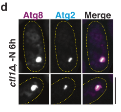

Atg2 is a large, rod-shaped lipid transfer protein essential for autophagosome biogenesis. It physically tethers the endoplasmic reticulum (ER) to the expanding phagophore membrane while simultaneously transferring phospholipids from the ER to the phagophore for membrane expansion. The N-terminal Chorein_N domain contains a hydrophobic cavity that binds multiple lipid molecules, enabling high-capacity lipid transfer. Atg2 localizes to phagophore-ER contact sites (PERCS), where it works cooperatively with Atg18 (via PI3P binding) and the lipid scramblase Atg9 to coordinate membrane biogenesis. Beyond phospholipids, recent evidence shows ATG2 also transfers triglycerides. The protein is required for macroautophagy, mitophagy, and other selective autophagy pathways. Atg2 mutants show defective autophagosome formation and impaired Atg8 processing.
| GO Term | Evidence | Action | Reason |
|---|---|---|---|
|
GO:0000045
autophagosome assembly
|
IBA
GO_REF:0000033 |
ACCEPT |
Summary: Atg2 is essential for autophagosome assembly, functioning as a lipid transfer protein that tethers the ER to the expanding phagophore and mediates phospholipid transfer for membrane expansion. This is phylogenetically conserved across ATG2 family members (PMID:30911189).
Reason: This is a core function of Atg2 confirmed by extensive experimental evidence. The IBA annotation is well-supported by the phylogenetic analysis and confirmed by direct experimental evidence in S. pombe showing Atg2 is required for autophagosome formation (PMID:23950735, PMID:37553386). Note on the falcon supporting_text below: in Sun et al. 2013 (PMID:23950735), atg2Δ lacks the biochemical free-CFP band in the CFP-Atg8 processing (immunoblot) assay, but in the CFP-Atg8 puncta imaging assay atg2Δ is classified as Group 3 - cells form abnormally numerous, brighter, and long-lived Atg8 puncta. Maturation of autophagic structures is therefore severely impaired rather than a complete absence of puncta formation; the truly complete block of puncta formation belongs to the Atg8-conjugation and PI3K (atg6Δ, atg14Δ) mutants, not atg2Δ.
Supporting Evidence:
PMID:30911189
Atg2 acts as a lipid-transfer protein that supplies phospholipids for autophagosome formation
file:SCHPO/atg2/atg2-deep-research-perplexity.md
Atg2 is essential for autophagosome formation, whereby the newly synthesized isolation membrane (IM) expands to form a complete autophagosome using endomembrane-derived lipids
file:SCHPO/atg2/atg2-deep-research-falcon.md
atg2Δ** mutants fail to show CFP-Atg8 processing under nitrogen starvation, indicating blocked autophagy flux
|
|
GO:0000407
phagophore assembly site
|
IBA
GO_REF:0000033 |
ACCEPT |
Summary: Atg2 localizes to the phagophore assembly site (PAS) where it tethers the ER to the nascent phagophore. This localization is conserved across eukaryotes.
Reason: PAS localization is a core aspect of Atg2 function, supported by the phylogenetic inference and confirmed by direct IDA evidence in S. pombe (PMID:23950735, PMID:31941401).
Supporting Evidence:
PMID:23950735
Ctl1 became largely restricted to PAS in starved atg1delta or atg2delta cells
file:SCHPO/atg2/atg2-deep-research-falcon.md
Atg9 recycling from PAS requires Atg1 and Atg2
file:SCHPO/atg2/atg2-deep-research-falcon.md
Atg18a promotes PAS targeting of Atg2
|
|
GO:0000422
autophagy of mitochondrion
|
IBA
GO_REF:0000033 |
ACCEPT |
Summary: Atg2 participates in mitophagy (autophagy of mitochondria) as part of the core autophagy machinery required for selective organelle degradation.
Reason: The IBA annotation reflects that Atg2 is required for the autophagy machinery that degrades mitochondria. While Atg2 is not a mitophagy-specific receptor, it is essential for the general autophagy process that includes mitophagy. The deep research confirms Atg2 is critical for selective organelle autophagy including mitochondria and ER.
Supporting Evidence:
file:SCHPO/atg2/atg2-deep-research-perplexity.md
Atg2 is particularly important for selective autophagy of organelles, especially the autophagy of endoplasmic reticulum (ER) and mitochondrial compartments
|
|
GO:0061908
phagophore
|
IBA
GO_REF:0000033 |
ACCEPT |
Summary: Atg2 localizes to the phagophore where it mediates lipid transfer at the membrane edge during autophagosome expansion.
Reason: Phagophore localization is central to Atg2 function and conserved across ATG2 family. Confirmed by IDA in S. pombe (PMID:37553386).
Supporting Evidence:
file:SCHPO/atg2/atg2-deep-research-perplexity.md
Following induction of autophagy by nitrogen starvation, more than 80% of phagophores marked by mCh-Atg8 or Atg2-tdT contained Rop1-mNG
file:SCHPO/atg2/atg2-deep-research-falcon.md
Atg2 is described as residing at the **phagophore rim**, a highly curved region
|
|
GO:0000425
pexophagy
|
IBA
GO_REF:0000033 |
ACCEPT |
Summary: Atg2 is involved in pexophagy (selective autophagy of peroxisomes) as part of the core autophagy machinery. UniProt notes Atg2 is required for peroxisome degradation.
Reason: The IBA annotation is appropriate as Atg2 is required for the autophagy machinery that mediates selective peroxisome degradation. This is phylogenetically conserved and noted in the UniProt entry as a known function.
Supporting Evidence:
file:SCHPO/atg2/atg2-uniprot.txt
Lipid transfer protein required for autophagosomes completion and peroxisome degradation
|
|
GO:0043495
protein-membrane adaptor activity
|
IBA
GO_REF:0000033 |
ACCEPT |
Summary: Atg2 functions as a protein-membrane adaptor, bridging the ER membrane and the phagophore through its distinct N-terminal and C-terminal membrane-binding regions.
Reason: This molecular function describes Atg2's tethering activity connecting two membranes. Confirmed by EXP evidence in S. pombe (PMID:30911189) and is phylogenetically conserved.
Supporting Evidence:
PMID:30911189
Atg2 physically links the edge of the expanding IM with the endoplasmic reticulum (ER), a role that is essential for autophagosome formation
file:SCHPO/atg2/atg2-deep-research-falcon.md
an N-terminal ER-associated lipid-transfer module and a C-terminal region involved in phagophore association and interaction with Atg9 and Atg18/WIPI proteins
|
|
GO:0061723
glycophagy
|
IBA
GO_REF:0000033 |
KEEP AS NON CORE |
Summary: Atg2 is involved in glycophagy as part of the core autophagy machinery, though this is inferred from phylogenetic analysis with Drosophila and other species.
Reason: While Atg2 is essential for autophagy and would be required for glycophagy, there is no direct evidence in S. pombe for glycophagy involvement. The IBA is based on inference from other species. Accept as a non-core function.
Supporting Evidence:
GO_REF:0000033
[IBA annotation inferred from Drosophila and S. cerevisiae orthologs via phylogenetic analysis]
|
|
GO:0032266
phosphatidylinositol-3-phosphate binding
|
IBA
GO_REF:0000033 |
MODIFY |
Summary: Atg2 binding to PI3P is indirect, mediated through its partner Atg18 which directly binds PI3P via its PROPPIN domain.
Reason: The deep research indicates that PI3P binding is mediated by Atg18/WIPI proteins, not
Atg2 directly. Atg2 recruitment to PI3P-enriched membranes depends on Atg18. The
annotation should be considered in context - if this is meant to indicate functional
association with PI3P through the Atg2-Atg18 complex, it may be misleading as a direct
molecular function of Atg2. The falcon deep research reinforces this: in S. pombe the
Atg18-family member Atg18a (not Atg2 itself) promotes PAS targeting of Atg2, consistent
with PI3P recognition being delegated to the Atg18 partner. The more informative core
molecular function of Atg2 is lipid transfer activity (GO:0120013).
Proposed replacements:
lipid transfer activity
Supporting Evidence:
file:SCHPO/atg2/atg2-uniprot.txt
The latter binding is assisted by an atg18-PtdIns3P interaction
file:SCHPO/atg2/atg2-deep-research-falcon.md
Atg18a promotes PAS targeting of Atg2
|
|
GO:0034727
piecemeal microautophagy of the nucleus
|
IBA
GO_REF:0000033 |
KEEP AS NON CORE |
Summary: Atg2 is involved in piecemeal microautophagy of the nucleus (PMN) as part of the core autophagy machinery based on phylogenetic inference from S. cerevisiae.
Reason: While PMN is documented in S. cerevisiae and Atg2 would be required as part of the autophagy machinery, there is no direct evidence for this specific process in S. pombe. Keep as non-core function based on phylogenetic inference.
Supporting Evidence:
GO_REF:0000033
[IBA annotation inferred from S. cerevisiae ortholog SGD:S000005186 via phylogenetic analysis]
|
|
GO:0061709
reticulophagy
|
IBA
GO_REF:0000033 |
ACCEPT |
Summary: Atg2 is involved in reticulophagy (ER-phagy) as part of the core autophagy machinery. The deep research confirms Atg2 is critical for selective autophagy of ER.
Reason: The deep research states Atg2 is particularly important for selective autophagy of organelles including ER. This is consistent with Atg2's role at ER-phagophore contact sites. Accept as representing a core selective autophagy function.
Supporting Evidence:
file:SCHPO/atg2/atg2-deep-research-perplexity.md
Atg2 is particularly important for selective autophagy of organelles, especially the autophagy of endoplasmic reticulum (ER) and mitochondrial compartments
|
|
GO:0005789
endoplasmic reticulum membrane
|
IEA
GO_REF:0000044 |
ACCEPT |
Summary: Atg2 associates with the ER membrane through its N-terminal region, tethering the ER to the phagophore at membrane contact sites.
Reason: ER membrane association is a core aspect of Atg2 function, essential for lipid transfer from ER to phagophore. The IEA from UniProt subcellular location is accurate and supported by the deep research and UniProt entry.
Supporting Evidence:
file:SCHPO/atg2/atg2-uniprot.txt
Atg2 binds to the ER exit site (ERES), which is the membrane source for autophagosome formation, using basic residues in its N-terminal region (NR)
file:SCHPO/atg2/atg2-deep-research-falcon.md
ATG2/Atg2 is a rod-like, bridge-like lipid transfer protein** that operates at **phagophore–ER membrane contact sites**
|
|
GO:0006869
lipid transport
|
IEA
GO_REF:0000043 |
ACCEPT |
Summary: Atg2 is a lipid transfer protein that transports phospholipids from ER to phagophore, and also transfers triglycerides.
Reason: Lipid transport is a core molecular function of Atg2. While GO:0120010 (intermembrane phospholipid transfer) or GO:0120013 (lipid transfer activity) are more specific, this broader IEA annotation from keyword mapping is not incorrect.
Supporting Evidence:
PMID:30911189
Atg2 acts as a lipid-transfer protein that supplies phospholipids for autophagosome formation
file:SCHPO/atg2/atg2-deep-research-falcon.md
ATG2 supplies lipids while ATG9 equilibrates lipids across leaflets to enable bilayer expansion
|
|
GO:0006914
autophagy
|
IEA
GO_REF:0000120 |
ACCEPT |
Summary: Atg2 is essential for autophagy, functioning in autophagosome biogenesis through lipid transfer and membrane tethering.
Reason: Autophagy is the core biological process for Atg2. This IEA annotation from InterPro/UniProt combined methods is accurate and supported by extensive experimental evidence including IMP annotations for macroautophagy.
Supporting Evidence:
file:SCHPO/atg2/atg2-deep-research-perplexity.md
Autophagy-related protein 2 (Atg2, UniProt O94649) from the fission yeast Schizosaccharomyces pombe is a large multifunctional protein representing one of the most evolutionarily conserved yet previously enigmatic components of the autophagy machinery
file:SCHPO/atg2/atg2-deep-research-falcon.md
is required for starvation-induced bulk autophagy** as measured by the standard **CFP-Atg8 processing assay**
|
|
GO:0030435
sporulation resulting in formation of a cellular spore
|
IEA
GO_REF:0000043 |
KEEP AS NON CORE |
Summary: Atg2 is required for normal sporulation in S. pombe, which depends on autophagy for nutrient recycling during nitrogen starvation. The gene was originally identified as mug36 (meiotically up-regulated gene 36).
Reason: While Atg2 is upregulated during meiosis/sporulation and autophagy-deficient mutants show partial sporulation defects, this is a consequence of the autophagy function rather than a direct role in sporulation machinery. The deep research notes that autophagy supplies nutrients for sporulation, so Atg2 involvement is indirect.
Supporting Evidence:
file:SCHPO/atg2/atg2-deep-research-perplexity.md
autophagy-defective cells were also able to sporulate when a prototrophic strain was subjected to nitrogen starvation, which suggested that fission yeast may store sufficient intracellular nitrogen to allow partial sporulation
|
|
GO:0034045
phagophore assembly site membrane
|
IEA
GO_REF:0000044 |
ACCEPT |
Summary: Atg2 localizes to the phagophore assembly site membrane where it functions in membrane tethering and lipid transfer.
Reason: This cellular component annotation accurately reflects Atg2 localization. Confirmed by IDA evidence at PAS (PMID:23950735, PMID:31941401), and the falcon deep research adds that Atg2 is required for retrograde recycling of Atg9/Ctl1 away from the PAS.
Supporting Evidence:
PMID:23950735
Ctl1 became largely restricted to PAS in starved atg1delta or atg2delta cells
file:SCHPO/atg2/atg2-deep-research-falcon.md
Ctl1 becomes largely restricted to the PAS
|
|
GO:0051321
meiotic cell cycle
|
IEA
GO_REF:0000043 |
REMOVE |
Summary: This annotation derives from the UniProt Meiosis keyword assigned because atg2/mug36 was identified as meiotically up-regulated. However, Atg2 is autophagy machinery, not meiotic cell cycle machinery.
Reason: This is a clear over-annotation. Atg2 is autophagy machinery that becomes upregulated during meiosis/sporulation because autophagy provides nutrients needed for this process. Atg2 has no direct role in meiotic cell cycle regulation (chromosome segregation, cell division, etc.). The gene was named mug36 (meiotically up-regulated) based on expression pattern, not function. ATG genes are not meiotic regulators - they are upregulated during meiosis because autophagy is induced. This SPKW-derived annotation conflates correlation (upregulation during meiosis) with causation (involvement in meiosis).
Supporting Evidence:
file:SCHPO/atg2/atg2-deep-research-perplexity.md
autophagy-defective cells were also able to sporulate when a prototrophic strain was subjected to nitrogen starvation, which suggested that fission yeast may store sufficient intracellular nitrogen to allow partial sporulation
|
|
GO:0140344
triglyceride transfer activity
|
TAS
PMID:41296734 ATG2 is a triglyceride transfer protein. |
MODIFY |
Summary: Recent work demonstrates that ATG2 can transfer triglycerides in addition to phospholipids. This expands our understanding of ATG2 as a broad lipid transfer protein. However, the cited study (PMID:41296734) examines human ATG2A exclusively; there is no direct S. pombe atg2 triglyceride-transfer data, so the assertion for S. pombe rests on cross-species inference from the conserved bridge-like lipid transfer domain.
Reason: The biological assignment (triglyceride transfer activity for the ATG2 family) is plausible, but the TAS evidence code is not appropriate for the S. pombe atg2 annotation. PMID:41296734 (Korfhage et al., PNAS 2025, "ATG2 is a triglyceride transfer protein") studies HUMAN ATG2A exclusively - all biochemical work uses purified ATG2A on synthetic liposomes/lipid droplets, and the lipidomics is of purified ATG2A; the paper contains no S. pombe atg2 data. TAS (Traceable Author Statement) requires the cited paper to directly state the function for the annotated protein. An inference from mammalian ATG2A to S. pombe atg2 based on structural conservation is sequence/ortholog-based inference (ISS/ISO/IBA), not TAS. The term itself is retained because the function is likely conserved given the conserved hydrophobic-channel lipid-transfer domain, but the evidence code should be corrected to reflect cross-species inference rather than a direct traceable statement for S. pombe atg2. Until confirmed experimentally in S. pombe (see suggested experiments), this should not be treated as a directly established S. pombe atg2 function.
Proposed replacements:
triglyceride transfer activity
Supporting Evidence:
PMID:41296734
the neutral lipid triacylglycerol is also rapidly transported, with kinetics similar to those of phospholipid transport
|
|
GO:0000423
mitophagy
|
IC
GO_REF:0000111 |
ACCEPT |
Summary: Atg2 is involved in mitophagy as part of the core autophagy machinery required for selective mitochondrial degradation. This IC annotation is inferred from autophagosome assembly (GO:0000045) and autophagy of mitochondrion (GO:0000422).
Reason: The IC inference is sound - Atg2 is essential for autophagosome assembly which is required for mitophagy. Also supported by IBA for GO:0000422. Accept as core function.
Supporting Evidence:
GO_REF:0000111
[IC annotation inferred from GO:0000045 and GO:0000422]
|
|
GO:0000045
autophagosome assembly
|
EXP
PMID:37553386 A conserved membrane curvature-generating protein is crucial... |
ACCEPT |
Summary: Direct experimental evidence shows Atg2 is required for autophagosome formation in S. pombe. Atg2-tdT colocalizes with phagophores and is essential for autophagy.
Reason: Strong experimental evidence confirming Atg2's core role in autophagosome assembly. This is the primary function of the protein.
Supporting Evidence:
file:SCHPO/atg2/atg2-deep-research-perplexity.md
Following induction of autophagy by nitrogen starvation, more than 80% of phagophores marked by mCh-Atg8 or Atg2-tdT contained Rop1-mNG
|
|
GO:0061908
phagophore
|
IDA
PMID:37553386 A conserved membrane curvature-generating protein is crucial... |
ACCEPT |
Summary: Direct assay shows Atg2 localizes to phagophores during autophagy in S. pombe.
Reason: IDA evidence confirms phagophore localization, consistent with Atg2's role in lipid transfer at phagophore-ER contact sites. The falcon deep research adds high-resolution APEX2 EM evidence placing Atg2 specifically at the phagophore rim/tips.
Supporting Evidence:
file:SCHPO/atg2/atg2-deep-research-perplexity.md
Following induction of autophagy by nitrogen starvation, more than 80% of phagophores marked by mCh-Atg8 or Atg2-tdT contained Rop1-mNG
file:SCHPO/atg2/atg2-deep-research-falcon.md
Atg2-APEX2 electron-dense precipitate concentrates at the tips/rims** of cup-shaped phagophores
file:SCHPO/atg2/atg2-deep-research-falcon.md
~80% of open phagophores exhibit rim labeling for Atg2** by APEX2 EM
|
|
GO:0043495
protein-membrane adaptor activity
|
EXP
PMID:30911189 Atg2 mediates direct lipid transfer between membranes for au... |
ACCEPT |
Summary: Experimental evidence from crystallography and functional studies shows Atg2 bridges membranes, acting as a protein-membrane adaptor that tethers ER to phagophore.
Reason: Core molecular function demonstrated by structural and functional studies. The Chorein_N domain crystal structure and lipid transfer assays confirm this activity.
Supporting Evidence:
PMID:30911189
Atg2 physically links the edge of the expanding IM with the endoplasmic reticulum (ER), a role that is essential for autophagosome formation
|
|
GO:0120010
intermembrane phospholipid transfer
|
TAS
PMID:32213462 Inter-organelle lipid transfer: a channel model for Vps13 an... |
ACCEPT |
Summary: Atg2 mediates intermembrane phospholipid transfer as a bridge-like lipid transfer protein, transferring phospholipids from ER to expanding phagophore.
Reason: Core biological process for Atg2, directly demonstrated biochemically (PMID:30911189) and reviewed in PMID:32213462 as part of the chorein-N motif protein family mechanism.
Supporting Evidence:
PMID:32213462
they are not shuttles but instead are bridges between membranes, with lipids traversing the cytosol via the hydrophobic channel
PMID:30911189
Atg2 acts as a lipid-transfer protein that supplies phospholipids for autophagosome formation
|
|
GO:0000407
phagophore assembly site
|
IDA
PMID:31941401 Atg38-Atg8 interaction in fission yeast establishes a positi... |
ACCEPT |
Summary: Direct assay shows Atg2 localizes to the phagophore assembly site in S. pombe, consistent with its role in autophagosome biogenesis.
Reason: IDA confirms PAS localization. The study on Atg38-Atg8 interaction shows PAS accumulation of Atg2 is reduced by disrupting the Atg38-Atg8 interaction, confirming Atg2's PAS localization.
Supporting Evidence:
file:SCHPO/atg2/atg2-deep-research-perplexity.md
PAS accumulation of Atg2, Atg18b, Atg24b, Atg5, Atg16, and Atg8 reduced by the Atg38 AIM mutation
|
|
GO:0016236
macroautophagy
|
IMP
PMID:19778961 Autophagy-deficient Schizosaccharomyces pombe mutants underg... |
ACCEPT |
Summary: Mutant phenotype analysis shows atg2 deletion impairs macroautophagy in S. pombe.
Reason: IMP evidence from mutant phenotype analysis confirms Atg2 is required for macroautophagy. This is the core biological process for the protein. The falcon supporting_text below refers to the biochemical CFP-Atg8 processing (free-CFP immunoblot) assay, which atg2Δ fails. In the complementary imaging assay (Sun et al. 2013, PMID:23950735) atg2Δ is a Group 3 mutant - Atg8 puncta are abnormally numerous and long-lived, i.e. autophagosome maturation is severely impaired rather than puncta being absent. Both readouts agree that productive macroautophagy flux is blocked.
Supporting Evidence:
file:SCHPO/atg2/atg2-deep-research-perplexity.md
Schizosaccharomyces pombe Atg2 is required for starvation-induced bulk autophagy, the non-selective degradation of cytoplasmic components in response to nutrient starvation
file:SCHPO/atg2/atg2-deep-research-falcon.md
atg2Δ** mutants fail to show CFP-Atg8 processing under nitrogen starvation, indicating blocked autophagy flux
|
|
GO:0000407
phagophore assembly site
|
IDA
PMID:23950735 Global analysis of fission yeast mating genes reveals new au... |
ACCEPT |
Summary: Direct assay shows Atg2 localizes to PAS, and Atg2 is required for normal PAS dynamics.
Reason: IDA evidence confirming PAS localization. The study shows Atg8 puncta in atg2 delta cells are long-lasting structures, indicating Atg2's role in PAS organization.
Supporting Evidence:
PMID:23950735
we found that Atg8 puncta in atg2delta cells were also long-lasting structures
file:SCHPO/atg2/atg2-deep-research-falcon.md
Atg9 puncta almost completely overlap with Atg8 puncta
|
|
GO:0016236
macroautophagy
|
IMP
PMID:23950735 Global analysis of fission yeast mating genes reveals new au... |
ACCEPT |
Summary: Mutant phenotype analysis in the global screen for autophagy factors shows atg2 deletion causes macroautophagy defects.
Reason: Confirmed by IMP mutant phenotype - atg2 delta shows defective Atg8 processing and long-lasting Atg8 puncta, indicating impaired macroautophagy.
Supporting Evidence:
PMID:23950735
we found that Atg8 puncta in atg2delta cells were also long-lasting structures
file:SCHPO/atg2/atg2-deep-research-falcon.md
mutants form **Atg8 puncta that are abnormally numerous and long-lived**, consistent with impaired progression/maturation of autophagic structures
|
Q: Does S. pombe Atg2 also transfer triglycerides like mammalian ATG2A?
Q: What is the stoichiometry of the Atg2-Atg18 complex in S. pombe?
Q: Is Atg2 required for all selective autophagy pathways or are some bypassed?
Experiment: In vitro lipid transfer assays with purified S. pombe Atg2 to confirm triglyceride transfer
Hypothesis: S. pombe Atg2 transfers triglycerides similar to mammalian ATG2A
Experiment: Cryo-EM structure of full-length S. pombe Atg2 to understand domain organization
Hypothesis: Full-length Atg2 adopts rod-shaped conformation with continuous hydrophobic channel
Experiment: Live cell imaging of Atg2 dynamics during selective autophagy (mitophagy, ER-phagy)
Hypothesis: Atg2 dynamics differ between bulk and selective autophagy
Exported on March 22, 2026 at 12:35 AM
Organism: Schizosaccharomyces pombe
Sequence:
MRLPSWLKNSSSWLWTAALSRTVQRRLLAFALRKLIGSILLENVQPEDIDILFSKGVLMLSNLQLNCSFLNAVVSLPMINFTKGTLRRLILRLNVTDIVNLNVELEVNGLSLEIELVPPDESLSSTTYEDAPSQLDILDNVVEYMNKTASQDFEDEVINEGLESEIDGSSHNLLDSILQKCLASTSVLMQDALVYIGTANMSTRLEAKLDFMSFSSVKSNSTSRLLNINGITVSMVRPISKSNAGSSSPPRSEESFVSMDSSSSIVEGFENDLSPSQVTLNESSIISSNREEESFYSVHDSVTQKKTRTSWLIFQCSGEFRLVFSIESSNLLVIESHVPSCVLNINSQVIAFLLYLYGYFLPAPSTPGFSSNKPPLTMLQLDIHISSVQILTHCKLPESQDFSMHNDVDELLHTIPSNGAVFEMKINQIQIFNDNNDIDELTMTFSDLDIFMDSVTLVSFGKSLQSPCSLIFKKLERIVSLFIHIPGGEISLPLGKALLLQESFVEFTNDISNLQNFLSNSDPFKRSIQETFEAPKPFEVEMNQPSFEIIALFDELQLQILNELSTQSLYKLTLRVSHLQFTRKSTGSLSSVLIFVKKIGCQSELFNCENSDWTKVSSSTAFHLSNSLFETHDTTGTSNFAVSIQQEKHYYPVFQPAPTEFSYPEKHFYFAVDNFNVFISKEVVRLFKTLYETIASSLVTPVTPNKLVTSDYKNVLKIRTRTFSLSLLNDDGSSFALKCIRIKHYMCWAGAQLISLSLRLYNVSAEYLSESLEILPVVSFIRNLRNDEKYLLNADFSYALKRSSGSNDNTIFVKITDLGYEHYPTCPWISDLLKTYFPQDPEVPFLAFPDFPFNIKLDLRESIIGLNPRTLEAKLLLYLKSLDVEIDALVASNPLNIRIMAAETVVYIIDKLNQSVLEGKTSVLKREILNSSLHFPGLSIKDTIEFVVKSLGYVEISQLKNLTLSLVVNAEEGVFSTLITVDNLDAQVQSCADSTELLIKVLSDLGSTEDEEISDCYLALPIEDYAKSLTEVDYNFFENRGIDYKSNPTEQSTVLVSSDNDISSQEIKIVDDYYISSNEHSTHASDLASVSSEEFVIDDGSSSIIDISDELQDESSSRDSLKKGIELIEDYYLSQSTSKLESSVEGKNYLLKVKFKDINVNWDLHDGYDWEATRATISSAIEKLCDSSSQNDKISPEAKTLLFQSIVIKSFSKVGRLNINHVSEPIDSDEFADYLSKSISYHLRLGKSKSKKIGIEIKDLQGSFTVYADSNEPNAVLNDLDIGLKDLIIYDHLSTSTWNKFFGRDSRSPSSKNRNQHMNAQIVTVRPLPELNNRELRLEFSVLPCKMYIDQDTLDFLIRFLTFQTPSSSETLNTEPDLPFFQSICINATHVTIDFKFKSADKVGLRSGKLPDLGSLIVMQGSEVFLRQLQIYGLSGAEEFLNALLNVWLQDIRNNQLSKVLNGVVPIRTMFTVGRGIKDIFVSPVRGLQGNHSVGSFRHGIIKFTEKYVNDFLSLNAQGATGTHSLLRQAESYLERGSNASASASRARSYYAEQPETIEQGLRQGYSGLKQGLLGAKSTLMGLPRETRSHKSLGGVAQTVGRKVPLIVLQPMIGATEAVSKTLLGLSNSLQPQRRQDMREKYKRPG
I begin with the InterPro architecture: a single, expansive ATG2-family signature, IPR026849 (Autophagy-related protein 2 family) spanning residues 23–1643. This uninterrupted, near full-length coverage defines a very large, soluble membrane-associated scaffold that characterizes the ATG2 lineage. ATG2-family proteins form elongated, amphipathic, often coiled interfaces that dimerize and cradle membrane surfaces; this architecture causes extensive protein–protein and membrane–protein interactions rather than enzymatic catalysis. The dominance of one broad family domain across essentially the entire polypeptide indicates a dedicated role in autophagy initiation and membrane handling.
From this domain logic, the molecular function is driven by multivalent assembly and membrane coupling. The ATG2 fold supports high-capacity protein binding that organizes autophagy initiation machinery and membrane carriers. This justifies a primary function in protein binding (GO:0005515), while the lack of catalytic cores and the known scaffolding behavior argue that activity emerges from structural organization rather than enzymatic turnover.
These assembly properties propagate upward into biological process. ATG2-family scaffolds nucleate and stabilize the isolation membrane and autophagosome biogenesis pathway by physically tethering and funneling membrane surfaces toward phagophore expansion. This causal role places the protein squarely in autophagy (GO:0006914), where it coordinates upstream initiation and membrane supply with downstream enclosure and maturation.
Cellular localization follows directly from the membrane-coupling architecture and the dynamic topography of autophagy structures. The soluble, extended scaffold binds and tracks curved isolation membranes that transition into autophagosomes, placing the protein at the autophagosome (GO:0005737). Its operational context—bridging initiation, expansion, and closure—requires presence on cytoplasmic vesicles and transient membrane assemblies that define the autophagic compartment.
Mechanistically, I infer that the protein forms elongated dimers that cradle and tether isolation membranes, receiving lipid flux and stabilizing curvature while recruiting initiation modules. Likely interaction partners include the ATG12–ATG5–ATG16 conjugation system and the ATG9 vesicle carrier, which together generate and deliver membrane needed for phagophore growth. Additional transient contacts with curvature-sensing and trafficking factors would coordinate vesicle supply with autophagosome formation and maturation.
A large autophagy-dedicated scaffold that orchestrates autophagosome biogenesis in fission yeast. It assembles and stabilizes isolation membrane structures, recruiting initiation machinery and engaging membrane carriers to drive phagophore expansion and closure. By coupling extensive protein–protein interfaces with membrane association, it supports the formation and maturation of autophagic vesicles within the autophagy pathway.
Involved in autophagy.
IPR026849, family) — residues 23-1643Molecular Function: molecular_function (GO:0003674), transporter activity (GO:0005215), lipid transporter activity (GO:0005319), lipid transfer activity (GO:0120013)
Biological Process: biological_process (GO:0008150), metabolic process (GO:0008152), cellular process (GO:0009987), localization (GO:0051179), establishment of localization (GO:0051234), cellular component organization or biogenesis (GO:0071840), cellular metabolic process (GO:0044237), process utilizing autophagic mechanism (GO:0061919), macromolecule localization (GO:0033036), catabolic process (GO:0009056), lipid localization (GO:0010876), cellular component organization (GO:0016043), cellular catabolic process (GO:0044248), transport (GO:0006810), autophagy (GO:0006914), macroautophagy (GO:0016236), lipid transport (GO:0006869), organic substance transport (GO:0071702), membrane organization (GO:0061024), intermembrane lipid transfer (GO:0120009)
Cellular Component: cellular_component (GO:0005575), cellular anatomical entity (GO:0110165), autophagosome (GO:0005737), intracellular anatomical structure (GO:0005622), phagophore assembly site (GO:0000407)
Generated by BioReason
Exported on March 22, 2026 at 12:35 AM
Organism: Schizosaccharomyces pombe
Sequence:
MRLPSWLKNSSSWLWTAALSRTVQRRLLAFALRKLIGSILLENVQPEDIDILFSKGVLMLSNLQLNCSFLNAVVSLPMINFTKGTLRRLILRLNVTDIVNLNVELEVNGLSLEIELVPPDESLSSTTYEDAPSQLDILDNVVEYMNKTASQDFEDEVINEGLESEIDGSSHNLLDSILQKCLASTSVLMQDALVYIGTANMSTRLEAKLDFMSFSSVKSNSTSRLLNINGITVSMVRPISKSNAGSSSPPRSEESFVSMDSSSSIVEGFENDLSPSQVTLNESSIISSNREEESFYSVHDSVTQKKTRTSWLIFQCSGEFRLVFSIESSNLLVIESHVPSCVLNINSQVIAFLLYLYGYFLPAPSTPGFSSNKPPLTMLQLDIHISSVQILTHCKLPESQDFSMHNDVDELLHTIPSNGAVFEMKINQIQIFNDNNDIDELTMTFSDLDIFMDSVTLVSFGKSLQSPCSLIFKKLERIVSLFIHIPGGEISLPLGKALLLQESFVEFTNDISNLQNFLSNSDPFKRSIQETFEAPKPFEVEMNQPSFEIIALFDELQLQILNELSTQSLYKLTLRVSHLQFTRKSTGSLSSVLIFVKKIGCQSELFNCENSDWTKVSSSTAFHLSNSLFETHDTTGTSNFAVSIQQEKHYYPVFQPAPTEFSYPEKHFYFAVDNFNVFISKEVVRLFKTLYETIASSLVTPVTPNKLVTSDYKNVLKIRTRTFSLSLLNDDGSSFALKCIRIKHYMCWAGAQLISLSLRLYNVSAEYLSESLEILPVVSFIRNLRNDEKYLLNADFSYALKRSSGSNDNTIFVKITDLGYEHYPTCPWISDLLKTYFPQDPEVPFLAFPDFPFNIKLDLRESIIGLNPRTLEAKLLLYLKSLDVEIDALVASNPLNIRIMAAETVVYIIDKLNQSVLEGKTSVLKREILNSSLHFPGLSIKDTIEFVVKSLGYVEISQLKNLTLSLVVNAEEGVFSTLITVDNLDAQVQSCADSTELLIKVLSDLGSTEDEEISDCYLALPIEDYAKSLTEVDYNFFENRGIDYKSNPTEQSTVLVSSDNDISSQEIKIVDDYYISSNEHSTHASDLASVSSEEFVIDDGSSSIIDISDELQDESSSRDSLKKGIELIEDYYLSQSTSKLESSVEGKNYLLKVKFKDINVNWDLHDGYDWEATRATISSAIEKLCDSSSQNDKISPEAKTLLFQSIVIKSFSKVGRLNINHVSEPIDSDEFADYLSKSISYHLRLGKSKSKKIGIEIKDLQGSFTVYADSNEPNAVLNDLDIGLKDLIIYDHLSTSTWNKFFGRDSRSPSSKNRNQHMNAQIVTVRPLPELNNRELRLEFSVLPCKMYIDQDTLDFLIRFLTFQTPSSSETLNTEPDLPFFQSICINATHVTIDFKFKSADKVGLRSGKLPDLGSLIVMQGSEVFLRQLQIYGLSGAEEFLNALLNVWLQDIRNNQLSKVLNGVVPIRTMFTVGRGIKDIFVSPVRGLQGNHSVGSFRHGIIKFTEKYVNDFLSLNAQGATGTHSLLRQAESYLERGSNASASASRARSYYAEQPETIEQGLRQGYSGLKQGLLGAKSTLMGLPRETRSHKSLGGVAQTVGRKVPLIVLQPMIGATEAVSKTLLGLSNSLQPQRRQDMREKYKRPG
I begin with the InterPro architecture: a single, expansive ATG2-family signature, IPR026849 (Autophagy-related protein 2 family) spanning residues 23–1643. This uninterrupted, near full-length coverage defines a very large, soluble membrane-associated scaffold that characterizes the ATG2 lineage. ATG2-family proteins form elongated, amphipathic, often coiled interfaces that dimerize and cradle membrane surfaces; this architecture causes extensive protein–protein and membrane–protein interactions rather than enzymatic catalysis. The dominance of one broad family domain across essentially the entire polypeptide indicates a dedicated role in autophagy initiation and membrane handling.
From this domain logic, the molecular function is driven by multivalent assembly and membrane coupling. The ATG2 fold supports high-capacity protein binding that organizes autophagy initiation machinery and membrane carriers. This justifies a primary function in protein binding (GO:0005515), while the lack of catalytic cores and the known scaffolding behavior argue that activity emerges from structural organization rather than enzymatic turnover.
These assembly properties propagate upward into biological process. ATG2-family scaffolds nucleate and stabilize the isolation membrane and autophagosome biogenesis pathway by physically tethering and funneling membrane surfaces toward phagophore expansion. This causal role places the protein squarely in autophagy (GO:0006914), where it coordinates upstream initiation and membrane supply with downstream enclosure and maturation.
Cellular localization follows directly from the membrane-coupling architecture and the dynamic topography of autophagy structures. The soluble, extended scaffold binds and tracks curved isolation membranes that transition into autophagosomes, placing the protein at the autophagosome (GO:0005737). Its operational context—bridging initiation, expansion, and closure—requires presence on cytoplasmic vesicles and transient membrane assemblies that define the autophagic compartment.
Mechanistically, I infer that the protein forms elongated dimers that cradle and tether isolation membranes, receiving lipid flux and stabilizing curvature while recruiting initiation modules. Likely interaction partners include the ATG12–ATG5–ATG16 conjugation system and the ATG9 vesicle carrier, which together generate and deliver membrane needed for phagophore growth. Additional transient contacts with curvature-sensing and trafficking factors would coordinate vesicle supply with autophagosome formation and maturation.
A large autophagy-dedicated scaffold that orchestrates autophagosome biogenesis in fission yeast. It assembles and stabilizes isolation membrane structures, recruiting initiation machinery and engaging membrane carriers to drive phagophore expansion and closure. By coupling extensive protein–protein interfaces with membrane association, it supports the formation and maturation of autophagic vesicles within the autophagy pathway.
Involved in autophagy.
IPR026849, family) — residues 23-1643Molecular Function: molecular_function (GO:0003674), transporter activity (GO:0005215), lipid transporter activity (GO:0005319), lipid transfer activity (GO:0120013)
Biological Process: biological_process (GO:0008150), metabolic process (GO:0008152), cellular process (GO:0009987), localization (GO:0051179), establishment of localization (GO:0051234), cellular component organization or biogenesis (GO:0071840), cellular metabolic process (GO:0044237), process utilizing autophagic mechanism (GO:0061919), macromolecule localization (GO:0033036), catabolic process (GO:0009056), lipid localization (GO:0010876), cellular component organization (GO:0016043), cellular catabolic process (GO:0044248), transport (GO:0006810), autophagy (GO:0006914), macroautophagy (GO:0016236), lipid transport (GO:0006869), organic substance transport (GO:0071702), membrane organization (GO:0061024), intermembrane lipid transfer (GO:0120009)
Cellular Component: cellular_component (GO:0005575), cellular anatomical entity (GO:0110165), autophagosome (GO:0005737), intracellular anatomical structure (GO:0005622), phagophore assembly site (GO:0000407)
Generated by BioReason
The research report should be a detailed narrative explaining the function, biological processes, and localization of the gene product. Citations should be given for all claims.
You should prioritize authoritative reviews and primary scientific literature when conducting research. You can supplement
this with annotations you find in gene/protein databases, but these can be outdated or inaccurate.
We are specifically interested in the primary function of the gene - for enzymes, what reaction is catalyzed, and what is the substrate specificity? For transporters, what is the substrate? For structural proteins or adapters, what is the broader structural role? For signaling molecules, what is the role in the pathway.
We are interested in where in or outside the cell the gene product carries out its function.
We are also interested in the signaling or biochemical pathways in which the gene functions. We are less interested in broad pleiotropic effects, except where these elucidate the precise role.
Include evidence where possible. We are interested in both experimental evidence as well as inference from structure, evolution, or bioinformatic analysis. Precise studies should be prioritized over high-throughput, where available.
The research target is Atg2 from fission yeast Schizosaccharomyces pombe strain 972, also known as mug36, reported in the fission-yeast autophagy literature as atg2Δ and associated with the fission-yeast autophagy factor set (e.g., in systematic genetic/localization work). (sun2013globalanalysisof pages 3-5, sun2013globalanalysisof pages 7-10, xu2022fissionyeastautophagy pages 5-7)
Important disambiguation: “Atg2/ATG2” is a conserved autophagy gene family across eukaryotes; mechanistic work in budding yeast and mammals is used below only as conserved background and is labeled as such, while S. pombe-specific claims are supported by S. pombe studies. (kotani2018theatg2atg18complex pages 1-2, gomezsanchez2018atg9establishesatg2dependent pages 21-21, duarte2023theorganizationand pages 5-7)
Macroautophagy (“autophagy”) proceeds through assembly of a phagophore (isolation membrane) that expands and closes into a double-membrane autophagosome. In yeast, many autophagy factors concentrate at the PAS (phagophore assembly site). In fission yeast, Atg2 is treated as part of the core autophagosome biogenesis machinery and is recruited to the PAS in an Atg18-family-dependent manner (review synthesis). (xu2022fissionyeastautophagy pages 4-5, xu2022fissionyeastautophagy pages 5-7)
A widely supported model (largely from budding yeast and mammalian systems) is that ATG2/Atg2 is a rod-like, bridge-like lipid transfer protein that operates at phagophore–ER membrane contact sites, providing lipid flux to support phagophore expansion; Atg2 also acts as a tether between membranes. (duarte2023theorganizationand pages 4-5, duarte2023theorganizationand pages 5-7, duarte2023theorganizationand pages 7-9)
A second core concept is cooperation between ATG2 and ATG9: ATG2 provides non-vesicular lipid transfer, while ATG9 functions as a lipid scramblase to equilibrate lipids across bilayer leaflets, enabling net membrane expansion. (duarte2023theorganizationand pages 13-14, choi2024emergingrolesof pages 7-8, duarte2023theorganizationand pages 4-5)
In S. pombe, Atg2 is required for starvation-induced bulk autophagy as measured by the standard CFP-Atg8 processing assay: atg2Δ mutants fail to show CFP-Atg8 processing under nitrogen starvation, indicating blocked autophagy flux. (sun2013globalanalysisof pages 3-5)
Live-cell imaging in S. pombe shows that atg2Δ mutants form Atg8 puncta that are abnormally numerous and long-lived, consistent with impaired progression/maturation of autophagic structures. (sun2013globalanalysisof pages 3-5)
These phenotypes position Atg2 as a factor required for normal phagophore/autophagosome biogenesis dynamics rather than merely for autophagosome-vacuole fusion. (sun2013globalanalysisof pages 3-5)
A key advance for S. pombe Atg2 localization comes from high-resolution imaging/EM in 2023. In S. pombe, Atg2 is described as residing at the phagophore rim, a highly curved region (reported rim diameter ~15–17 nm), and Atg2 is among factors thought to localize to this rim. (wang2023aconservedmembrane pages 1-3)
Wang et al. (2023) directly support rim/tip localization in S. pombe using:
- Fluorescence microscopy: in ctl1Δ cells with enlarged phagophores, Atg2 localizes to a sub-region of the Atg8-positive structure (consistent with subdomain/rim restriction). (wang2023aconservedmembrane pages 8-10, wang2023aconservedmembrane media e70bb975)
- APEX2 EM labeling: Atg2-APEX2 electron-dense precipitate concentrates at the tips/rims of cup-shaped phagophores, whereas Atg5 shows more even distribution, supporting specific Atg2 enrichment at phagophore extremities. (wang2023aconservedmembrane pages 8-10, wang2023aconservedmembrane media e70bb975)
Quantitative localization statistic: Wang et al. quantify that ~80% of open phagophores exhibit rim labeling for Atg2 by APEX2 EM. (wang2023aconservedmembrane media e70bb975)
(Visual evidence is provided in cropped Figure 6 panels showing Atg2 subdomain localization and APEX2 EM rim labeling/quantification.) (wang2023aconservedmembrane media e70bb975, wang2023aconservedmembrane media 0cd67841, wang2023aconservedmembrane media fe55a58b)
Atg9 and Ctl1 recycling from the PAS depends on Atg2: In starved S. pombe atg2Δ (and atg1Δ) cells, Atg9 puncta almost completely overlap with Atg8 puncta, leading to the conclusion that Atg9 recycling from PAS requires Atg1 and Atg2. (sun2013globalanalysisof pages 7-10)
Similarly, Ctl1 becomes largely restricted to the PAS in starved atg2Δ cells, indicating Atg2 is also required for Ctl1 recycling/retrograde trafficking away from the PAS. (sun2013globalanalysisof pages 7-10)
Atg9–Ctl1 physical association: Atg9 and Ctl1 co-immunoprecipitate in S. pombe, supporting that these proteins operate in a shared module whose correct cycling/localization requires Atg2. (sun2013globalanalysisof pages 7-10)
Atg18-family linkage (review synthesis in S. pombe): The fission-yeast review states that Atg2 is recruited to the PAS, and that Atg18a promotes PAS targeting of Atg2 (noted as unpublished in the review). The review also states that deletion of atg1 or atg2 restricts Atg9 and Ctl1 to the PAS, reinforcing the primary-study findings. (xu2022fissionyeastautophagy pages 4-5, xu2022fissionyeastautophagy pages 5-7)
Although direct biochemical lipid-transfer measurements for S. pombe Atg2 were not found in the retrieved S. pombe texts, mechanistic work in other systems provides a coherent model consistent with S. pombe phenotypes and rim localization.
In S. cerevisiae, Atg2 forms a complex with Atg18 and tethers pre-autophagosomal membranes to the ER, with distinct membrane-binding regions at the N- and C-termini; loss of Atg2–Atg18 blocks isolation membrane formation even when other Atg proteins accumulate at PAS. (kotani2018theatg2atg18complex pages 1-2)
A 2023 review on phagophore–ER membrane contact sites summarizes that ATG2 proteins are rod-like (~20 nm) bridge-like factors with lipid-handling features (hydrophobic groove/RBG modules) and that Atg2/ATG2 has membrane-binding sites at both ends—an N-terminal ER-associated lipid-transfer module and a C-terminal region involved in phagophore association and interaction with Atg9 and Atg18/WIPI proteins. (duarte2023theorganizationand pages 4-5, duarte2023theorganizationand pages 5-7, duarte2023theorganizationand pages 7-9)
The same review emphasizes that ATG9/Atg9 is now strongly supported as a lipid scramblase and that ATG2 (and VPS13-family bridges) mediate lipid transfer to growing phagophores; together, these data support a model where ATG2 supplies lipids while ATG9 equilibrates lipids across leaflets to enable bilayer expansion. (duarte2023theorganizationand pages 13-14, duarte2023theorganizationand pages 4-5, duarte2023theorganizationand pages 1-2)
A 2024 review focused on ATG9/ATG9A similarly describes a cooperative model in which ATG9 and ATG2 function at ER–phagophore contact sites to drive phagophore expansion, while noting open questions such as how cells enforce directionality of lipid flow. (choi2024emergingrolesof pages 7-8)
Wang et al. (Aug 2023, Nature Communications) provide a strong S. pombe-specific advance by placing Atg2 at the phagophore rim/tips via APEX2 EM and by quantifying rim labeling in ~80% of open phagophores, giving high-confidence spatial context for function. (wang2023aconservedmembrane media e70bb975, wang2023aconservedmembrane pages 8-10)
Duarte & Reggiori (Jan 2023, Contact) highlight phagophore–ER membrane contact sites as organizational centers where ATG2, ATG9, and Atg18/WIPI accumulate and act, and summarize a shift from vesicle-fusion-only models toward a lipid-transfer/scrambling framework for membrane growth. (duarte2023theorganizationand pages 1-2, duarte2023theorganizationand pages 13-14)
Wei et al. (Apr 2024, Cell Discovery) identify ANKFY1 as an ATG2A-binding FYVE-domain protein that binds PI3P and recruits/anchors ATG2A to PI3P-rich endosomal membranes; ANKFY1 approximately doubles ATG2A-mediated lipid transfer in an in vitro assay, and ANKFY1 depletion phenocopies ATG2A/B depletion (reduced autophagy flux, impaired autophagosome growth/closure). This expands the prevailing view that the ER is the only lipid donor by adding an endosomal lipid-transfer route to phagophores. (wei2024ankfy1bridgesatg2amediated pages 10-12, wei2024ankfy1bridgesatg2amediated pages 1-2, wei2024ankfy1bridgesatg2amediated pages 4-8)
Because ATG2 family proteins are central to autophagosome biogenesis, S. pombe Atg2 is practically used as a genetically tractable model to interrogate conserved principles of membrane growth and organelle contact-site biology. The combination of strong loss-of-function phenotypes (blocked CFP-Atg8 processing) and high-resolution localization (phagophore rim) provides an experimentally robust system for mechanistic dissection. (sun2013globalanalysisof pages 3-5, wang2023aconservedmembrane media e70bb975)
In mammals, ATG2-dependent lipid transfer and the ATG2–ATG9 partnership are active targets of mechanistic cell biology because autophagy influences neurodegeneration, infection biology, cancer, and metabolic disease; the 2024 ANKFY1 work illustrates that identifying new regulators of ATG2-mediated lipid flux can reveal new intervention points or biomarkers of autophagosome growth/closure. (wei2024ankfy1bridgesatg2amediated pages 10-12, wei2024ankfy1bridgesatg2amediated pages 4-8, choi2024emergingrolesof pages 7-8)
Two authoritative recent reviews converge on the following expert consensus and open questions:
1) Consensus: phagophore growth is driven largely by lipid transfer at membrane contact sites, with ATG2/Atg2 as a key bridge-like lipid-transfer factor and ATG9 as a scramblase. (duarte2023theorganizationand pages 1-2, choi2024emergingrolesof pages 7-8)
2) Open questions: precise molecular coordination among ATG2, ATG9, and Atg18/WIPI (timing, directionality, and regulation of lipid flow) remains incompletely resolved. (duarte2023theorganizationand pages 1-2, choi2024emergingrolesof pages 7-8)
In S. pombe (Wang et al., 2023):
- ~80% of open phagophores show Atg2 rim labeling by APEX2 EM. (wang2023aconservedmembrane media e70bb975)
- Following nitrogen starvation, >80% of phagophores marked by Atg8 or Atg2 contain Rop1, consistent with early co-recruitment. (wang2023aconservedmembrane pages 8-10)
- Phagophore rim diameter reported as ~15–17 nm (provides scale for curvature at the Atg2-enriched rim). (wang2023aconservedmembrane pages 1-3)
In mammalian mechanistic reconstitution (Wei et al., 2024):
- ANKFY1 approximately doubles ATG2A-mediated lipid transfer in vitro in a FRET-based liposome assay; enhancement depends on PI3P and ANKFY1 FYVE domain integrity. (wei2024ankfy1bridgesatg2amediated pages 10-12)
Primary function (cell biological): Atg2 is an essential factor for starvation-induced macroautophagy in S. pombe and is required for normal phagophore/autophagosome biogenesis dynamics. (sun2013globalanalysisof pages 3-5)
Likely mechanistic role in S. pombe (supported by localization + conserved model): Atg2 localizes to the phagophore rim/tips, consistent with an organizational role at membrane contact sites that support phagophore expansion; its loss leads to accumulation of stalled Atg8 structures. (wang2023aconservedmembrane media e70bb975, sun2013globalanalysisof pages 3-5)
Localization: PAS/phagophore-associated, enriched at rims/tips of cup-shaped phagophores by APEX2 EM; subdomain localization on enlarged phagophores in ctl1Δ. (wang2023aconservedmembrane media e70bb975, wang2023aconservedmembrane pages 8-10)
Pathway/module membership: Functionally linked to the Atg9/Ctl1 trafficking/cycling module; Atg2 is required for recycling of Atg9 and Ctl1 away from PAS under starvation; Ctl1 and Atg9 physically associate. (sun2013globalanalysisof pages 7-10)
| Aspect (function/localization/partner/phenotype/quant data) | Key finding | Experimental basis (assay) | Organism/system | Citation (author year journal) + URL | Context ID |
|---|---|---|---|---|---|
| function | S. pombe-specific: Atg2 is required for starvation-induced autophagy; atg2Δ lacked CFP-Atg8 processing, consistent with blocked autophagy flux. | CFP-Atg8 processing assay under nitrogen starvation | Schizosaccharomyces pombe | Sun et al. 2013, PLoS Genetics — https://doi.org/10.1371/journal.pgen.1003715 | (sun2013globalanalysisof pages 3-5) |
| phenotype | S. pombe-specific: atg2Δ cells showed Atg8 puncta that were more numerous than wild type and long-lived, indicating defective progression/maturation of autophagic structures. | Time-lapse fluorescence microscopy of Atg8 puncta | Schizosaccharomyces pombe | Sun et al. 2013, PLoS Genetics — https://doi.org/10.1371/journal.pgen.1003715 | (sun2013globalanalysisof pages 3-5) |
| partner/localization | S. pombe-specific: Atg2 is required for retrograde trafficking of Atg9 from the PAS; in starved atg2Δ cells, Atg9 puncta almost completely overlapped with Atg8 puncta, indicating PAS retention. | Fluorescent protein co-localization microscopy (Atg9 with Atg8) in mutants | Schizosaccharomyces pombe | Sun et al. 2013, PLoS Genetics — https://doi.org/10.1371/journal.pgen.1003715 | (sun2013globalanalysisof pages 7-10) |
| partner/localization | S. pombe-specific: Ctl1 became largely restricted to the PAS in starved atg2Δ cells, supporting an Atg2-dependent recycling step for Ctl1 as well as Atg9. | Fluorescent localization of YFP-Ctl1 with Atg8 in mutants | Schizosaccharomyces pombe | Sun et al. 2013, PLoS Genetics — https://doi.org/10.1371/journal.pgen.1003715 | (sun2013globalanalysisof pages 7-10) |
| partner | S. pombe-specific: Ctl1 physically interacts with Atg9; together with the atg2Δ localization phenotype, this places Atg2 in the Atg9/Ctl1 trafficking module at the PAS. | Co-immunoprecipitation plus localization genetics | Schizosaccharomyces pombe | Sun et al. 2013, PLoS Genetics — https://doi.org/10.1371/journal.pgen.1003715 | (sun2013globalanalysisof pages 7-10) |
| localization | S. pombe-specific: Atg2 localizes to a sub-region of enlarged Atg8-positive phagophores in ctl1Δ cells, consistent with phagophore rim/subdomain localization rather than uniform distribution. | Dual-color fluorescence microscopy (Atg2-tdT with Atg8 marker) | Schizosaccharomyces pombe | Wang et al. 2023, Nature Communications — https://doi.org/10.1038/s41467-023-40530-4 | (wang2023aconservedmembrane pages 8-10, wang2023aconservedmembrane media e70bb975) |
| localization | S. pombe-specific: APEX2 EM labeling placed Atg2 at the tips/rims of cup-shaped phagophores; unlike Atg5, labeling was not evenly distributed over the phagophore. | Correlative ultrastructure with APEX2 electron microscopy | Schizosaccharomyces pombe | Wang et al. 2023, Nature Communications — https://doi.org/10.1038/s41467-023-40530-4 | (wang2023aconservedmembrane pages 8-10, wang2023aconservedmembrane media e70bb975) |
| quant data | S. pombe-specific: In Wang et al., approximately 80% of open phagophores showed rim labeling for Atg2 by APEX2 EM quantification. | Quantified APEX2 EM localization | Schizosaccharomyces pombe | Wang et al. 2023, Nature Communications — https://doi.org/10.1038/s41467-023-40530-4 | (wang2023aconservedmembrane media e70bb975) |
| quant data | S. pombe-specific: Following nitrogen starvation, >80% of Atg8- or Atg2-marked phagophores contained Rop1, supporting early co-recruitment of a curvature factor with Atg2 at forming phagophores. | Live-cell fluorescence microscopy and colocalization quantification | Schizosaccharomyces pombe | Wang et al. 2023, Nature Communications — https://doi.org/10.1038/s41467-023-40530-4 | (wang2023aconservedmembrane pages 8-10) |
| localization/quant data | S. pombe-specific: Wang et al. discuss Atg2 at the highly curved phagophore rim; the reported yeast phagophore rim diameter is about 15–17 nm, consistent with Atg2 acting at extreme membrane curvature. | Ultrastructural interpretation integrated with localization data | Schizosaccharomyces pombe | Wang et al. 2023, Nature Communications — https://doi.org/10.1038/s41467-023-40530-4 | (wang2023aconservedmembrane pages 1-3) |
| localization/partner | S. pombe-specific review: Atg2 is recruited to the PAS, and Atg18a promotes PAS targeting of Atg2; deletion of atg1 or atg2 restricts Atg9 and Ctl1 localization to the PAS. | Review synthesis of fluorescence localization/genetic studies | Schizosaccharomyces pombe | Xu & Du 2022, Cells — https://doi.org/10.3390/cells11071086 | (xu2022fissionyeastautophagy pages 5-7, xu2022fissionyeastautophagy pages 7-8, xu2022fissionyeastautophagy pages 4-5) |
| function/localization | Non-S. pombe / inferred: Current consensus model is that ATG2/Atg2 is a rod-like lipid transfer protein and tether at phagophore-ER membrane contact sites, with an N-terminal ER-associated lipid-transfer module and C-terminal phagophore-binding region acting with Atg9 and Atg18/WIPI proteins. | Review of structural, biochemical, and cell-biological studies | Mainly budding yeast and mammalian systems; inferred to S. pombe by conservation | Duarte & Reggiori 2023, Contact — https://doi.org/10.1177/25152564231183898 | (duarte2023theorganizationand pages 4-5, duarte2023theorganizationand pages 5-7, duarte2023theorganizationand pages 7-9, duarte2023theorganizationand pages 1-2) |
| partner/function | Non-S. pombe / inferred: ATG2 works cooperatively with ATG9, which acts as a lipid scramblase; the combined model is that ATG2 transfers lipids into the phagophore while ATG9 equilibrates lipids across leaflets to support membrane expansion. | Review of recent cryo-EM, biochemical reconstitution, and genetics | Yeast and mammalian systems; inferred to S. pombe by conservation | Duarte & Reggiori 2023, Contact — https://doi.org/10.1177/25152564231183898; Choi et al. 2024, Autophagy — https://doi.org/10.1080/15548627.2024.2384349 | (duarte2023theorganizationand pages 13-14, duarte2023theorganizationand pages 4-5, choi2024emergingrolesof pages 7-8) |
| function/localization | Non-S. pombe / inferred: Budding-yeast Atg2-Atg18 tethers pre-autophagosomal membranes to the ER; Atg2 has membrane-binding regions at both ends, and loss of the complex blocks isolation membrane formation despite PAS accumulation of other Atg proteins. | Primary mechanistic study using mutagenesis, in vitro liposome tethering, PAS/ER localization assays | Saccharomyces cerevisiae; mechanistic inference for S. pombe homolog | Kotani et al. 2018, PNAS — https://doi.org/10.1073/pnas.1806727115 | (kotani2018theatg2atg18complex pages 1-2) |
| partner/localization | Non-S. pombe / inferred: Atg9 helps establish Atg2-dependent ER-phagophore contact sites and confines Atg2 to phagophore extremities; disrupting Atg2-Atg9 interaction causes abnormal Atg2/ER-contact distribution and severe autophagy defects. | Primary mechanistic study with Atg2 point mutants, localization analysis, and ultrastructure | Saccharomyces cerevisiae; mechanistic inference for S. pombe homolog | Gómez-Sánchez et al. 2018, Journal of Cell Biology — https://doi.org/10.1083/jcb.201710116 | (gomezsanchez2018atg9establishesatg2dependent pages 21-21) |
Table: This table compiles organism-specific evidence for Schizosaccharomyces pombe Atg2/mug36 and separates it from mechanistic inferences drawn from conserved Atg2 studies in other systems. It is useful for distinguishing direct annotation evidence from broader family-level functional models.
Direct biochemical demonstration of lipid-transfer activity for S. pombe Atg2 itself (e.g., purified SpAtg2 lipid-transfer kinetics) was not located in the retrieved S. pombe texts; the lipid-transfer/tether model is therefore presented as conserved mechanistic inference supported by authoritative reviews and non-S. pombe primary studies, while the core S. pombe phenotypes and localization are directly evidenced as above. (duarte2023theorganizationand pages 5-7, kotani2018theatg2atg18complex pages 1-2, wang2023aconservedmembrane media e70bb975)
References
(sun2013globalanalysisof pages 3-5): Ling-Ling Sun, Ming Li, Fang Suo, Xiao-Man Liu, En-Zhi Shen, Bing Yang, Meng-Qiu Dong, Wan-Zhong He, and Li-Lin Du. Global analysis of fission yeast mating genes reveals new autophagy factors. PLoS Genetics, 9:e1003715, Aug 2013. URL: https://doi.org/10.1371/journal.pgen.1003715, doi:10.1371/journal.pgen.1003715. This article has 123 citations and is from a domain leading peer-reviewed journal.
(sun2013globalanalysisof pages 7-10): Ling-Ling Sun, Ming Li, Fang Suo, Xiao-Man Liu, En-Zhi Shen, Bing Yang, Meng-Qiu Dong, Wan-Zhong He, and Li-Lin Du. Global analysis of fission yeast mating genes reveals new autophagy factors. PLoS Genetics, 9:e1003715, Aug 2013. URL: https://doi.org/10.1371/journal.pgen.1003715, doi:10.1371/journal.pgen.1003715. This article has 123 citations and is from a domain leading peer-reviewed journal.
(xu2022fissionyeastautophagy pages 5-7): Dan-Dan Xu and Li-Lin Du. Fission yeast autophagy machinery. Cells, 11:1086, Mar 2022. URL: https://doi.org/10.3390/cells11071086, doi:10.3390/cells11071086. This article has 29 citations.
(kotani2018theatg2atg18complex pages 1-2): Tetsuya Kotani, Hiromi Kirisako, Michiko Koizumi, Yoshinori Ohsumi, and Hitoshi Nakatogawa. The atg2-atg18 complex tethers pre-autophagosomal membranes to the endoplasmic reticulum for autophagosome formation. Proceedings of the National Academy of Sciences, 115:10363-10368, Sep 2018. URL: https://doi.org/10.1073/pnas.1806727115, doi:10.1073/pnas.1806727115. This article has 328 citations and is from a highest quality peer-reviewed journal.
(gomezsanchez2018atg9establishesatg2dependent pages 21-21): Rubén Gómez-Sánchez, Jaqueline Rose, Rodrigo Guimarães, Muriel Mari, Daniel Papinski, Ester Rieter, Willie J. Geerts, Ralph Hardenberg, Claudine Kraft, Christian Ungermann, and Fulvio Reggiori. Atg9 establishes atg2-dependent contact sites between the endoplasmic reticulum and phagophores. The Journal of Cell Biology, 217:2743-2763, May 2018. URL: https://doi.org/10.1083/jcb.201710116, doi:10.1083/jcb.201710116. This article has 319 citations.
(duarte2023theorganizationand pages 5-7): Prado Vargas Duarte and Fulvio Reggiori. The organization and function of the phagophore-er membrane contact sites. Contact, Jan 2023. URL: https://doi.org/10.1177/25152564231183898, doi:10.1177/25152564231183898. This article has 14 citations.
(xu2022fissionyeastautophagy pages 4-5): Dan-Dan Xu and Li-Lin Du. Fission yeast autophagy machinery. Cells, 11:1086, Mar 2022. URL: https://doi.org/10.3390/cells11071086, doi:10.3390/cells11071086. This article has 29 citations.
(duarte2023theorganizationand pages 4-5): Prado Vargas Duarte and Fulvio Reggiori. The organization and function of the phagophore-er membrane contact sites. Contact, Jan 2023. URL: https://doi.org/10.1177/25152564231183898, doi:10.1177/25152564231183898. This article has 14 citations.
(duarte2023theorganizationand pages 7-9): Prado Vargas Duarte and Fulvio Reggiori. The organization and function of the phagophore-er membrane contact sites. Contact, Jan 2023. URL: https://doi.org/10.1177/25152564231183898, doi:10.1177/25152564231183898. This article has 14 citations.
(duarte2023theorganizationand pages 13-14): Prado Vargas Duarte and Fulvio Reggiori. The organization and function of the phagophore-er membrane contact sites. Contact, Jan 2023. URL: https://doi.org/10.1177/25152564231183898, doi:10.1177/25152564231183898. This article has 14 citations.
(choi2024emergingrolesof pages 7-8): Jiyoung Choi, Haeun Jang, Zhao Xuan, and Daehun Park. Emerging roles of atg9/atg9a in autophagy: implications for cell and neurobiology. Autophagy, 20:2373-2387, Aug 2024. URL: https://doi.org/10.1080/15548627.2024.2384349, doi:10.1080/15548627.2024.2384349. This article has 25 citations and is from a domain leading peer-reviewed journal.
(wang2023aconservedmembrane pages 1-3): Ning Wang, Yoko Shibata, Joao A. Paulo, Steven P. Gygi, and Tom A. Rapoport. A conserved membrane curvature-generating protein is crucial for autophagosome formation in fission yeast. Nature Communications, Aug 2023. URL: https://doi.org/10.1038/s41467-023-40530-4, doi:10.1038/s41467-023-40530-4. This article has 24 citations and is from a highest quality peer-reviewed journal.
(wang2023aconservedmembrane pages 8-10): Ning Wang, Yoko Shibata, Joao A. Paulo, Steven P. Gygi, and Tom A. Rapoport. A conserved membrane curvature-generating protein is crucial for autophagosome formation in fission yeast. Nature Communications, Aug 2023. URL: https://doi.org/10.1038/s41467-023-40530-4, doi:10.1038/s41467-023-40530-4. This article has 24 citations and is from a highest quality peer-reviewed journal.
(wang2023aconservedmembrane media e70bb975): Ning Wang, Yoko Shibata, Joao A. Paulo, Steven P. Gygi, and Tom A. Rapoport. A conserved membrane curvature-generating protein is crucial for autophagosome formation in fission yeast. Nature Communications, Aug 2023. URL: https://doi.org/10.1038/s41467-023-40530-4, doi:10.1038/s41467-023-40530-4. This article has 24 citations and is from a highest quality peer-reviewed journal.
(wang2023aconservedmembrane media 0cd67841): Ning Wang, Yoko Shibata, Joao A. Paulo, Steven P. Gygi, and Tom A. Rapoport. A conserved membrane curvature-generating protein is crucial for autophagosome formation in fission yeast. Nature Communications, Aug 2023. URL: https://doi.org/10.1038/s41467-023-40530-4, doi:10.1038/s41467-023-40530-4. This article has 24 citations and is from a highest quality peer-reviewed journal.
(wang2023aconservedmembrane media fe55a58b): Ning Wang, Yoko Shibata, Joao A. Paulo, Steven P. Gygi, and Tom A. Rapoport. A conserved membrane curvature-generating protein is crucial for autophagosome formation in fission yeast. Nature Communications, Aug 2023. URL: https://doi.org/10.1038/s41467-023-40530-4, doi:10.1038/s41467-023-40530-4. This article has 24 citations and is from a highest quality peer-reviewed journal.
(duarte2023theorganizationand pages 1-2): Prado Vargas Duarte and Fulvio Reggiori. The organization and function of the phagophore-er membrane contact sites. Contact, Jan 2023. URL: https://doi.org/10.1177/25152564231183898, doi:10.1177/25152564231183898. This article has 14 citations.
(wei2024ankfy1bridgesatg2amediated pages 10-12): Bin Wei, Yuhui Fu, Xiuzhi Li, Fang Chen, Yiqing Zhang, Hanmo Chen, Mindan Tong, Linsen Li, Yi Pan, Shen Zhang, She Chen, Xiaoxia Liu, and Qing Zhong. Ankfy1 bridges atg2a-mediated lipid transfer from endosomes to phagophores. Cell Discovery, Apr 2024. URL: https://doi.org/10.1038/s41421-024-00659-y, doi:10.1038/s41421-024-00659-y. This article has 13 citations and is from a peer-reviewed journal.
(wei2024ankfy1bridgesatg2amediated pages 1-2): Bin Wei, Yuhui Fu, Xiuzhi Li, Fang Chen, Yiqing Zhang, Hanmo Chen, Mindan Tong, Linsen Li, Yi Pan, Shen Zhang, She Chen, Xiaoxia Liu, and Qing Zhong. Ankfy1 bridges atg2a-mediated lipid transfer from endosomes to phagophores. Cell Discovery, Apr 2024. URL: https://doi.org/10.1038/s41421-024-00659-y, doi:10.1038/s41421-024-00659-y. This article has 13 citations and is from a peer-reviewed journal.
(wei2024ankfy1bridgesatg2amediated pages 4-8): Bin Wei, Yuhui Fu, Xiuzhi Li, Fang Chen, Yiqing Zhang, Hanmo Chen, Mindan Tong, Linsen Li, Yi Pan, Shen Zhang, She Chen, Xiaoxia Liu, and Qing Zhong. Ankfy1 bridges atg2a-mediated lipid transfer from endosomes to phagophores. Cell Discovery, Apr 2024. URL: https://doi.org/10.1038/s41421-024-00659-y, doi:10.1038/s41421-024-00659-y. This article has 13 citations and is from a peer-reviewed journal.
(xu2022fissionyeastautophagy pages 7-8): Dan-Dan Xu and Li-Lin Du. Fission yeast autophagy machinery. Cells, 11:1086, Mar 2022. URL: https://doi.org/10.3390/cells11071086, doi:10.3390/cells11071086. This article has 29 citations.

Autophagy-related protein 2 (Atg2, UniProt O94649) from the fission yeast Schizosaccharomyces pombe is a large multifunctional protein representing one of the most evolutionarily conserved yet previously enigmatic components of the autophagy machinery. Recent structural and biochemical advances have revealed that Atg2 functions as a novel nonvesicular phospholipid transfer protein that mediates de novo autophagosome formation through dual mechanisms: physically tethering the endoplasmic reticulum (ER) to the expanding phagophore membrane while simultaneously transferring lipids between these two membrane compartments[1][7]. The protein localizes exclusively to contact sites between the ER exit sites (ERES) and the edge of the isolation membrane (IM), where it operates in complex with the phosphoinositide-binding protein Atg18 and the lipid scramblase Atg9 to coordinate the massive lipid redistribution required for autophagosome expansion. This discovery has fundamentally changed our understanding of how cells build the double-membrane autophagosomes during autophagy, revealing that lipid transfer proteins can directly mediate de novo organelle biogenesis rather than relying solely on vesicular trafficking mechanisms.
The atg2 gene was first identified in 1993 through a comprehensive screening of Saccharomyces cerevisiae autophagy-defective mutants that discovered thirteen autophagy genes, designated apg genes, which were later renamed to the atg nomenclature[1]. In S. pombe, the gene was identified through a large-scale screen for genes required for critical meiotic events and is also known by its alternative name mug36 (meiotically up-regulated gene 36), reflecting its initial discovery in the context of meiotic processes[2][21]. Eight years after the initial identification, in the early 2000s, the atg2 gene was formally cloned and sequenced, establishing that the protein product was essential for autophagosome formation during starvation-induced autophagy[1].
Even before detailed molecular characterization, researchers recognized that Atg2 possessed unusual properties as a peripheral membrane protein with high affinity for membranes[1]. The protein's behavior during autophagy was distinctive: it accumulated at the preautophagosomal structure (PAS, also called the phagophore assembly site) and localized specifically to nascent autophagosomal structures during their formation and expansion. When the atg2 gene was deleted in yeast strains, autophagy was severely impaired, resulting in accumulation of autophagic cargo and defective autophagosome formation. However, the precise molecular mechanism by which Atg2 contributed to autophagy remained mysterious for decades, earning it a reputation as one of the most poorly understood proteins in the autophagy field[1][7].
Atg2 proteins are exceptionally large molecules, with Schizosaccharomyces pombe Atg2 comprising 1,646 amino acid residues, and mammalian ATG2A reaching 1,938 residues[2]. Despite these large sizes, the protein maintains a characteristic elongated, rod-like morphology that extends approximately 20 nanometers in length with a width of roughly 30 angstroms[8]. This extended structure is fundamentally different from the compact, globular folds typical of most proteins, instead resembling a long bridge or tunnel-like apparatus.
At the molecular level, Atg2 proteins are organized into distinct functional domains with remarkable conservation across eukaryotes. The most highly conserved region resides at the N-terminus, where a domain designated Chorein_N (named after its similarity to domains in the protein Chorein, also called VPS13) contains the primary lipid transfer module[1][8][9]. This Chorein_N domain has been crystallized from Schizosaccharomyces pombe Atg2 (designated SpAtg2^NR^) at 2.7 angstrom resolution, revealing a globular structure comprising a helical region and a twisted β-sheet that fold together to create a large hydrophobic cavity[1][50]. When phosphatidylethanolamine (PE), a major cellular glycerophospholipid, is mixed with the SpAtg2^NR^ domain in crystallization conditions, a complex forms in which the PE molecule binds with its acyl chains buried within the hydrophobic cavity while the phosphate head group remains exposed to the aqueous solvent[1][50].
The central region of Atg2 contains five repeat structures primarily composed of β-strands rich in hydrophobic residues, predicted to form β-jellyroll-like folds that create successive hydrophobic grooves or pathways[1][50]. These repeating structures are proposed to form a continuous hydrophobic channel extending through the rod-shaped molecule. At the C-terminal end, Atg2 proteins contain a specialized domain designated ATG2_CAD (a cysteine-alanine-aspartic acid triad region) that appears to form one of the membrane-binding surfaces in complex with the cofactor Atg18[1][7][28].
Two distinct membrane-binding regions have been identified through truncation analysis: one at the N-terminus involving amino acids 2-21, and another at the C-terminus spanning residues 1,347-1,592 in S. cerevisiae Atg2[1][7]. While each binding site alone is sufficient for binding to membranes, both sites are required for the membrane-tethering function, indicating that both tips of the elongated rod simultaneously engage with separate membrane bilayers[1][7][38].
In mammalian ATG2A and ATG2B proteins, and similarly conserved in other organisms, a region designated the C-terminal localization region (CLR) spanning amino acids 1,723-1,829 in ATG2A contains amphipathic α-helices that mediate both autophagosomal membrane association and localization to lipid droplets[16][49]. This region is distinct from the primary lipid transfer module but contributes importantly to proper subcellular targeting of the protein.
The recognition that Atg2 functions as a lipid transfer protein emerged from parallel structural and biochemical investigations conducted primarily between 2018 and 2020[1][7][8][9]. Purified mammalian ATG2A protein was shown to bind to liposomes in a phosphoinositide-independent manner, in contrast to other autophagy proteins such as WIPI4 that strictly require high percentages of phosphatidylinositol-3-phosphate (PI3P) for liposome binding[1][8]. This broader binding capability suggested a different molecular basis for Atg2 function.
When researchers performed classic biochemistry experiments mixing purified ATG2A with donor and acceptor liposomes containing fluorescently labeled lipids, they observed transfer of multiple lipid species between the liposomes, including phosphatidylethanolamine (PE), phosphatidylserine (PS), and phosphatidylinositol (PI)[8][9]. Critically, each individual ATG2A molecule can bind and transfer approximately twenty glycerophospholipid molecules simultaneously, distinguishing it from classic lipid transfer proteins that typically transfer one lipid molecule at a time[9]. This high-capacity binding is achieved through the extended hydrophobic cavity running the length of the elongated rod-shaped molecule.
Quantitative analysis of ATG2A-mediated lipid transfer in in vitro assays revealed transfer rates of approximately 0.017 fluorescent-lipid molecules per protein per second in standard fluorescence-based assays[54]. When accounting for non-fluorescent lipid transfer, which occurs in parallel, the overall transfer rate could reach approximately 50-fold higher, estimating overall transfer rates of potentially 8-10 lipid molecules per protein per second[10][54]. However, even with these optimistic corrections, researchers recognized that the calculated transfer rates appeared insufficient to account for the tens of millions of lipids required to build an entire autophagosome in the observed timeframe of 5-10 minutes[10][54].
In parallel with lipid transfer characterization, biochemical studies revealed that purified ATG2A exhibits robust membrane-tethering (MT) activity[1][7][8]. When ATG2A was incubated with small unilamellar vesicles (SUVs), dynamic light scattering experiments demonstrated a dramatic shift in the size distribution toward larger vesicles, indicating that ATG2A was bridging and clustering SUVs together[11][37][40]. The two tips of the elongated ATG2A molecule act independently to bind separate membranes, spacing them approximately 10-20 nanometers apart—a distance characteristic of organelle contact sites observed throughout the cell[11][40].
The membrane-tethering activity of ATG2A demonstrated preference for membranes containing lipids with lipid-packing defects, such as those rich in phosphatidylethanolamine (PE) or those with high membrane curvature[37][40][51]. Small unilamellar vesicles with high curvature were efficiently tethered by ATG2A, whereas large unilamelular vesicles (LUVs) with lower curvature were not tethered despite maintaining interaction with the protein[40]. This selectivity for high-curvature membranes proved functionally relevant, as both the expanding IM edge and the ERES naturally assume high-curvature geometries in cells[1][50].
While ATG2A can transfer multiple glycerophospholipid species, detailed studies examining lipid transfer efficiency revealed important substrate preferences[8][37][40][54]. Transfer occurred most efficiently for lipids with packing defects introduced by small head groups (such as PE) or for negatively charged lipids including phosphatidylserine (PS) and phosphatidylinositol (PI)[37][40][54]. The transfer efficiency depended strongly on both the lipid composition and the presentation geometry of the donor and acceptor membranes, with tethered membranes showing dramatically enhanced transfer rates compared to untethered membranes[37][40].
Notably, PI3P-enriched membranes (such as the nascent phagophore) served as preferred acceptor membranes for ATG2A-mediated lipid transfer, while the phosphoinositide-rich ER provided the donor compartment[8][40][54]. This directional preference, while not absolute, suggests that the phagophore-ER membrane contact sites and the local lipid compositions naturally favor the directionality of lipid flow required for autophagosome expansion[8][40][54].
Atg2 functions as part of a larger molecular complex with the phosphoinositide-binding protein Atg18 (called WIPI1, WIPI2, or WIPI4 in mammalian cells)[1][7][15][26]. The Atg18 protein belongs to the PROPPIN (phosphoinositide-interacting protein) family and comprises seven WD40 repeats that fold into a characteristic β-propeller structure[26][38][53]. The Atg2-Atg18 complex was first recognized as a functional unit through genetic and cell biological studies, and the physical interaction was subsequently confirmed through biochemical approaches[26].
Recent structural studies revealed that Atg18 binding occurs near the C-terminal region of Atg2, with the 7AB loop of Atg18 serving as a key binding interface[26][29]. The crystal structure of Schizosaccharomyces pombe Atg18 determined at 2.8 angstrom resolution demonstrated that the 7AB loop located on the β-propeller structure provides a critical contact point for Atg2 interaction[26][29]. Disruption of this specific loop by deletion resulted in severely impaired Atg2 binding and loss of Atg2 localization to the phagophore assembly site, demonstrating the functional importance of this interaction[26][29].
Atg18 itself contains two phosphoinositide-binding sites: Site 1 located on blade 5 shows higher affinity for PI(3,5)P₂, while Site 2 on blade 6 exhibits stronger binding to PI(3)P[26][38][53]. The 6CD loop of Atg18 is particularly flexible and prone to forming an amphipathic helix that can insert into lipid bilayers, with this region being critical for the membrane scission activity attributed to the Atg2-Atg18 complex[26][53].
Emerging research has revealed that Atg2 physically interacts with Atg9, the transmembrane lipid scramblase protein embedded in autophagosomal and vesicular membranes[10][20][39]. The structural basis for this interaction involves alignment of the hydrophobic groove of ATG2A with the internal channel of ATG9A, suggesting direct hand-off of lipids between the transfer and scramblase activities[39]. This coupling represents an elegant solution to the challenge of asymmetric lipid distribution: ATG2 transfers lipids primarily to the outer leaflet of the nascent phagophore, while ATG9 scramblase activity equilibrates lipids between the inner and outer leaflets[20][39].
ATG9A forms a stable trimeric complex with a solvated central pore connected laterally to the cytosol through cavities within each protomer[20]. Molecular dynamics simulations and structural analysis suggest that the central pore of ATG9A can open laterally to accommodate lipid headgroups, enabling lipids to flip between membrane leaflets in an energy-independent manner[20]. The interaction between ATG2A and ATG9A creates a heterotetrameric complex that couples lipid transfer with lipid scrambling for bidirectional lipid distribution[39].
Recent studies discovered that the Atg2-Atg18 complex interacts with the Atg1 protein kinase complex, involving the C-terminal regions of Atg2[15][18]. This interaction appears to organize the spatial architecture of autophagosome nucleation sites and may coordinate signaling and lipid delivery processes during early autophagosome formation.
In mammalian cells, the WIPI4 protein (the mammalian ortholog of Atg18) associates with ATG2A to facilitate binding to PI3P-enriched phagophore membranes[8][11][40]. The ATG2A-WIPI4 complex exhibits asymmetric membrane binding capabilities through its two tips: the CAD tip binds PI3P-containing membranes via WIPI4, while the N tip can bind PI3P-free membranes such as the ER[11][40]. This asymmetric tethering geometry is particularly important, as it allows the complex to simultaneously recognize the distinct lipid compositions of the phagophore and ER compartments[11][40].
Critical recent findings revealed that ATG2A contains a highly conserved LC3 interaction region (LIR) motif at amino acids 1,362-1,365 in ATG2A and 1,491-1,494 in ATG2B[16][55]. This LIR allows direct interaction with the Atg8/LC3/GABARAP family of proteins, which are ubiquitin-like proteins conjugated to phosphatidylethanolamine on autophagosomal membranes[55]. The ATG2A-GABARAP interaction proved essential for autophagosome closure rather than phagophore expansion, with mutations disrupting this interaction resulting in accumulation of unsealed phagophores[55]. Strikingly, this closure function is independent of the ATG2A-WIPI4 interaction required for lipid transfer and membrane tethering[55], demonstrating that Atg2 functions in two sequential, mechanistically independent steps of autophagosome biogenesis.
Schizosaccharomyces pombe Atg2, like its mammalian and budding yeast counterparts, localizes exclusively to contact sites between the ER and the edge of the expanding phagophore, designated phagophore-ER contact sites (PERCS) or more generally as phagophore-ER membrane contact sites (PERMCSs)[7][13][16]. These contact sites represent specialized regions where the two membranes are held in close apposition at distances of 10-20 nanometers, a geometry ideal for nonvesicular lipid transfer[7][13][16].
The localization of Atg2 to PERCS depends critically on several upstream factors[13]. The ER-exit site (ERES) component Sec13 and the TRAPPIII complex work cooperatively with Atg2 to establish and maintain these membrane contact sites[13]. Bimolecular fluorescence complementation (BiFC) studies demonstrated that Atg2 physically associates with Sec13, suggesting direct interaction between the autophagy machinery and ERES components[13]. Deletion of the trs85 gene, which encodes a TRAPPIII complex component, reduced the BiFC signal between Sec13 and Atg2, indicating that TRAPPIII contributes to organizing the ERES localization at phagophore-ER contact sites[13].
Live-cell imaging studies in fission yeast revealed that newly formed PAS structures localize between the ER and the vacuole in most cases, with Atg2 appearing at the PAS immediately upon its formation[13]. This intimate spatial relationship between nascent phagophores and the ER suggests that the ER-phagophore contact site is not a late consequence of autophagosome formation but rather a primary determinant of autophagosome nucleation and early expansion[13]. At the PAS, Atg2-GFP forms punctate structures or small dots representing individual or clusters of autophagosome assembly sites[27].
The recruitment of Atg2 to autophagosomal structures depends on the generation of PI3P by the phosphatidylinositol 3-kinase (PI3K) complexes localized at the PAS[1][33]. Treatment of cells with wortmannin, a pharmacological inhibitor of class III PI3K, prevented the recruitment of Atg2/ATG2A to forming autophagosomes, while the upstream Atg1/ULK complex could still form[7][33]. This hierarchical organization indicates that ATG2 recruitment occurs downstream of PI3K activation and PI3P generation on the nascent phagophore[7][33].
The PI3P effector WIPI proteins (particularly WIPI4 in mammalian cells) are crucial for targeting ATG2A to the phagophore[8]. Overexpression of inactive WIPI4 mutants unable to bind PI3P prevented normal ATG2A recruitment, while providing excess wild-type WIPI4 enhanced ATG2A localization to autophagosomal structures[8].
The primary function of Atg2 in autophagy is to facilitate the dramatic expansion of the nascent isolation membrane or phagophore from its initial nucleation as a small crescent or cup-like structure into a large double-membrane autophagosome capable of enclosing cytoplasmic cargo. During the expansion phase, the phagophore grows from a few hundred nanometers in diameter to eventually reach sizes of 500-1500 nanometers depending on the cargo being engulfed[1][7][8].
In atg2 deletion mutants of budding yeast, autophagosomes fail to expand properly and remain as small, immature structures, with cargo remaining protease-accessible rather than protected within sealed autophagosomes[1][45]. Similarly, in mammalian cells with simultaneous knockout of ATG2A and ATG2B, unclosed autophagic structures accumulate at the phagophore assembly sites, with the phagophore capable of forming but unable to expand and seal[33]. These observations directly implicate Atg2 in the critical expansion step rather than in the initial nucleation of the phagophore.
The model emerging from multiple lines of evidence indicates that Atg2 mediates the physical supply of lipids from the ER to the growing phagophore membrane. In 2017, researchers demonstrated that the movement of lipophilic dyes from the ER to IM precursors was completely blocked by deletion of Atg2, even when other early autophagy factors were present[1][7]. This direct evidence for Atg2-mediated lipid movement between the ER and phagophore provided the crucial experimental support for the lipid transfer model.
The proposed mechanism involves Atg2-mediated extraction of lipids from the curved membranes of the ER-exit sites and subsequent delivery to the expanding edge of the phagophore where they serve as building blocks for membrane expansion[1][7][8]. Given that autophagosomes must grow by incorporating millions of lipid molecules within minutes, the high-capacity lipid binding of ATG2 (approximately twenty lipids per molecule) represents a significant advantage over single-lipid-transfer proteins in achieving the necessary flux[9].
Recent comprehensive studies revealed that the lipid transfer protein Vps13 cooperates with Atg2 at phagophore rims to ensure sufficient lipid delivery for autophagosome biogenesis[10]. Vps13 belongs to the same family of Chorein_N-domain proteins as Atg2 and localizes to the rims of approximately 90% of enlarged phagophores in wild-type cells[10]. Notably, Vps13 localization to forming autophagosomes does not require Atg2 or other core autophagy factors, suggesting parallel but independent recruitment of these two lipid transfer proteins[10].
The kinetic parameters revealed that Atg2-mediated phospholipid transfer (PLT) alone is not rate-limiting for autophagosome biogenesis[10]. Instead, the parallel action of Atg2 and Vps13 working at PERCS ensures sufficient lipid transfer rates to accommodate the rapid membrane expansion observed in living cells[10]. In the absence of Vps13, the number of Atg2 molecules at PERCS determines both the duration of autophagosome formation and the final size of forming autophagosomes, with an apparent in vivo transfer rate of approximately 200 phospholipids per Atg2 molecule per second[10].
Beyond its role in phagophore expansion through lipid transfer, Atg2 participates in a distinct process: the closure or sealing of the autophagosomal membrane[45][55]. The identification of a conserved LIR motif in ATG2A and ATG2B revealed direct interactions between ATG2 proteins and the Atg8/LC3/GABARAP family of autophagosomal proteins[55]. The ATG2A-GABARAP interaction appeared to function independently of the ATG2A-WIPI4 interaction required for lipid transfer[55].
In cells expressing ATG2A variants with mutations in the LIR motif (designated ATG2A-mLIR), the autophagy pathway exhibited severe defects in autophagosome closure despite retained ability to interact with WIPI4 and perform lipid transfer[55]. These mutant cells accumulated large numbers of unsealed, open autophagosomal structures containing Atg8/LC3 and other autophagy proteins but unable to form sealed compartments[55]. This separation-of-function analysis demonstrated that the ATG2-GABARAP interaction represents a mechanistically distinct closure pathway independent of lipid transfer activity[55].
The precise molecular mechanism by which the ATG2-GABARAP interaction promotes autophagosome closure remains under investigation, but several possibilities have been proposed[45][55]. One hypothesis suggests that multimerization of the LC3/GABARAP proteins on the phagophore membrane, mediated through their interactions with Atg2, generates sufficient mechanical force or stabilization to promote membrane fusion and sealing[45][55]. The LC3/GABARAP proteins possess the ability to interact with both lipids and proteins, including other LC3/GABARAP molecules, suggesting capacity for forming higher-order assemblies[55].
Another possibility involves the spatial organization of membrane scission machinery at the site of the Atg2-GABARAP interaction[45]. The ESCRT complexes and other scission factors known to be required for autophagosome closure might be brought into proximity through interactions with ATG2 and its associated proteins[45].
Schizosaccharomyces pombe Atg2 is required for starvation-induced bulk autophagy, the non-selective degradation of cytoplasmic components in response to nutrient starvation[3][6][25]. During nitrogen starvation, Atg2-GFP rapidly accumulates at autophagosomal structures, and deletion of atg2 severely impairs the autophagic response to nitrogen starvation[25].
Beyond bulk autophagy, Atg2 is particularly important for selective autophagy of organelles, especially the autophagy of endoplasmic reticulum (ER) and mitochondrial compartments (termed ER-autophagy and mitophagy, respectively)[3][6]. Studies in fission yeast demonstrated that during nitrogen starvation, both ER-GFP and mitochondrial markers (mito-mCherry) are delivered into vacuoles in an Atg5-dependent manner, and this organelle autophagy is severely compromised in atg20, atg24, and related mutants[3]. While not all selective autophagy pathways show equivalent dependence on Atg2, the protein appears critical for efficient selective degradation of large organellar structures.
In plant cells, Atg2 participates in pexophagy, the selective autophagy of peroxisomes[14][17]. Forward genetic screens in Arabidopsis thaliana identified atg2 mutations as suppressors of lon2 mutant phenotypes, with lon2 atg2 double mutants displaying rescued peroxisomal morphology and function[14]. The LON2 protease catalyzes matrix protein turnover within peroxisomes, and when LON2 is absent, peroxisomes accumulate abnormal proteins and are targeted for pexophagic degradation through Atg2-dependent mechanisms[14][17].
Evidence suggests that hydrogen peroxide and oxidative stress signals peroxisomal dysfunction and trigger selective autophagic degradation through Atg2-dependent mechanisms[17]. The selective autophagy of peroxisomes represents a quality control mechanism maintaining functional peroxisomal populations and preventing accumulation of organelles with compromised redox balance[14][17].
The structure and function of Atg2 have proven remarkably conserved across eukaryotic organisms from simple yeasts to plants and animals. The budding yeast Saccharomyces cerevisiae Atg2 shares fundamental structural organization with Schizosaccharomyces pombe Atg2, mammalian ATG2A and ATG2B, and plant ATG2 proteins[1][7][9]. The core lipid transfer domain (Chorein_N) is particularly well-conserved, with structural studies demonstrating essentially identical architecture in yeast and mammalian proteins[1][8][9].
Mammalian cells express two ATG2 paralogs, ATG2A and ATG2B, that arose from gene duplication and show approximately 44.5% amino acid sequence identity to each other but only 15-16% identity to the budding yeast protein[33]. Despite these sequence divergences, the proteins maintain functional redundancy, with both being capable of rescue of autophagy defects in cells lacking either protein[33]. The dual redundancy of mammalian ATG2 proteins suggests that the lipid transfer and membrane tethering functions are sufficiently important to warrant multiple genetic copies in higher organisms[33].
Atg2 belongs to a protein family united by their possession of the Chorein_N lipid transfer domain, which also includes the Vps13 family proteins (VPS13 in yeast and VPS13A, VPS13B, VPS13C, VPS13D in mammals)[12][31][34][56]. The N-terminal fragments of both Atg2 and Vps13 proteins sharing the Chorein_N domain show remarkable structural similarity despite low sequence conservation, with both folding into elongated molecules featuring large hydrophobic cavities[12][31][34][56]. The VPS13 proteins represent very large polypeptides (exceeding 3,000 amino acids in some cases) organized around repetitive β-groove (RBG) domains forming extended hydrophobic tunnels[56].
The shared architecture of the Chorein_N lipid transfer domain suggests that this represents an ancient lipid transfer module that was acquired early in eukaryotic evolution and subsequently deployed in multiple contexts involving membrane expansion and organellar biogenesis[12][31][34][56]. The discovery that both Atg2 and Vps13 function as high-capacity, bulk lipid transfer proteins distinguishes them from the previously characterized lipid transfer protein families, which typically transfer single lipids in a shuttle-like manner[12][31][34].
The bridge model proposes that Atg2 stably tethers the phagophore and ER membranes through simultaneous binding of both membrane-binding tips, while lipids translocate through the internal cavity extending from one tip to the other[54]. In this model, lipids occupy the hydrophobic cavity and travel along the extended hydrophobic groove as if sliding through a tunnel, with their acyl chains remaining buried in the hydrophobic microenvironment while their polar head groups remain exposed to the cytosolic solution[1][50][54]. This mechanism would position Atg2 as a stable bridge mediating lipid transfer without requiring the protein itself to shuttle between membranes[54].
An alternative ferry model suggests that the N-terminal lipid transfer domain of Atg2 can function independently as a lipid shuttle, with the N-terminal fragment cycling between the ER and phagophore while the C-terminal regions anchor the complex to the phagophore through WIPI interactions[54]. This model is supported by observations that N-terminal fragments of ATG2A comprising only amino acids 1-345 can mediate lipid transfer in vitro and fully rescue autophagy defects in cells[9][36]. In the ferry model, the anchored C-terminal regions hold the complex at the contact site while the N-terminal lipid transfer domain dynamically interacts with both membranes[54].
Recent evidence suggests that both models may operate: a stable bridge architecture for efficient bulk lipid transfer combined with dynamic shuttling of the N-terminal domain to extract lipids from the ER and insert them into the phagophore[54].
The structural evidence supports a model in which the continuous hydrophobic cavity or groove extending through the Atg2 rod acts as a dedicated pathway for lipid translocation[1][50]. The Chorein_N N-terminal domain, the five internal repeats, and the ATG2_CAD region collectively form this pathway, with lipid acyl chains sliding along the hydrophobic walls while the polar head groups remain solvated[1][50]. This contrasts with vesicular trafficking, where lipids would be packaged into membrane-enclosed compartments for transport, instead representing direct intermembrane transfer through a protein-mediated channel[1][50].
One of the most significant recent advances involved recognizing that Atg2 lipid transfer activity must be coupled with Atg9 lipid scramblase activity for effective autophagosome expansion[10][20][23][39]. While Atg2 can transfer lipids from the ER to the phagophore, it primarily inserts them into the outer leaflet of the phagophore membrane[20]. This would create severe lipid asymmetry incompatible with the bilayer geometry required for membrane expansion[20]. Atg9, which possesses lipid scramblase activity allowing energy-independent lipid flipping between membrane leaflets, solves this problem by equilibrating lipid distribution[20][23][39].
The physical interaction between Atg2 and Atg9 at the phagophore rim creates a minimal system for coordinated lipid transfer and scrambling[10][20][23][39]. Cryo-EM structural models suggest that the opening of Atg2's hydrophobic groove aligns with the internal channel of the Atg9 trimeric complex, allowing direct hand-off of lipids[39]. This coupling ensures that as Atg2 delivers lipids to the outer leaflet, Atg9 simultaneously equilibrates them between leaflets, preventing the osmotic stress and membrane disruption that would result from excessive outer leaflet expansion[20][39].
Recent studies in yeast revealed that the TRAPPIII tethering complex participates in establishing and organizing the phagophore-ER membrane contact sites where Atg2 operates[13]. TRAPPIII is a guanine nucleotide exchange factor (GEF) that activates the small GTPase Ypt1, and its recruitment to PERCS by interaction with Atg9 and other factors organizes the tethering machinery[13]. The interaction between TRAPPIII and Atg2 appears cooperative, with both complexes working to maintain the appropriate spacing and organization of phagophore-ER contact sites[13].
A surprising finding emerging from quantitative live-cell imaging studies is that Atg2-mediated lipid transfer is not rate-limiting for autophagosome biogenesis in wild-type cells[10]. Instead, the parallel action of multiple lipid transfer proteins including Vps13 ensures that sufficient phospholipid delivery occurs to support the observed rates of autophagosome expansion[10]. The number of Atg2 molecules at individual phagophores correlates with the final size of the forming autophagosome, suggesting that Atg2 abundance becomes rate-limiting only in specialized circumstances or in the absence of other lipid transfer proteins[10].
The essential requirement for Atg2 in autophagosome formation makes this protein critical for cellular homeostasis. Autophagy participates in degradation of damaged organelles, misfolded proteins, and pathogens, processes necessary for cellular health and survival during nutrient stress[1][7][8]. The inability to complete autophagosome formation in atg2 mutants results in accumulation of autophagic cargo and defective clearance of damaged cellular components[1][33].
In plant cells, disruption of Atg2 function through mutagenesis results in accelerated senescence, exhibiting phenotypes characteristic of premature aging including accumulation of cellular damage and oxidative stress[44]. The silencing of GmATG2 in soybean results in high levels of ubiquitinated protein accumulation and enhanced accumulation of polyubiquitinated protein aggregates, indicating that impaired autophagy leads to proteostasis failure[44]. These findings suggest that maintaining functional Atg2-mediated autophagy is essential for long-term cellular viability and the prevention of age-associated pathologies.
Recent investigations have noted that ATG9B, a less well-characterized mammalian homolog that can functionally cooperate with ATG2A, has been implicated in tumorigenesis, particularly in hepatocellular carcinoma development[23]. While detailed mechanisms remain to be elucidated, the connection between autophagy dysfunction and cancer suggests that alterations in Atg2/ATG2 functions could contribute to malignant transformation[23].
Schizosaccharomyces pombe Atg2 exhibits several features that distinguish it from better-characterized mammalian and budding yeast proteins. The fission yeast autophagy machinery shows important differences in the composition and organization of the Atg1 complex, with fission yeast requiring Atg11 for starvation-induced bulk autophagy, whereas budding yeast Atg11 is dispensable for this process[25]. These organismal differences suggest that the role and regulation of Atg2 may be somewhat specialized in fission yeast, though the core lipid transfer function is conserved.
Mammals express both ATG2A and ATG2B, with these proteins showing redundant but also potentially specialized functions[33][39]. Both proteins can independently support autophagy, but combined deletion is required to completely block autophagy, indicating functional overlap[33]. The existence of two ATG2 paralogs in mammals potentially allows tissue-specific or temporally-regulated autophagy responses through selective expression of each isoform[33][39].
Despite recent advances, several fundamental questions remain regarding the quantitative aspects of Atg2-mediated lipid transfer in living cells[54]. While in vitro lipid transfer rates have been measured, integrating these values with the known timecourse of autophagosome expansion and the total lipid content suggests that either additional mechanisms accelerate transfer, other lipid transfer proteins make essential contributions (as demonstrated for Vps13), or the in vitro assay conditions differ significantly from the cellular environment in ways that affect transfer rates[10][54].
The substrate selectivity of Atg2 and whether different lipid species are transferred at differential rates remains an area for investigation[54]. While bulk lipid transfer is a primary function of the Chorein_N proteins, whether specific lipid compositions or species are preferentially transferred to support particular aspects of autophagosome formation (such as maintaining specific phosphoinositide distributions or enriching particular lipid species) requires further study[54].
Although the N-terminal lipid transfer domain and other regions of Atg2 have been structurally characterized, the complete three-dimensional structure of full-length Atg2 remains to be determined at atomic resolution[1][7][50]. The organization and connectivity of the five internal repeat domains, their precise role in forming the continuous hydrophobic cavity, and how these regions interact with binding partners remain subjects for future structural investigations[1][7].
Autophagy-related protein 2 (Atg2) in Schizosaccharomyces pombe represents a remarkable example of how molecular characterization of conserved cellular machinery continues to reveal previously unsuspected mechanisms of cellular organization and membrane biology[1][7]. What was once recognized simply as an essential but enigmatic protein required for autophagosome formation has emerged as a sophisticated, multifunctional molecular device mediating both stable membrane tethering and high-capacity lipid transfer between organellar compartments[1][7][8]. The discovery that Atg2 functions as a lipid transfer protein has revolutionized our understanding of de novo autophagosome formation, providing a molecular mechanism for how cells can rapidly construct new membrane compartments through direct intermembrane lipid transport rather than relying exclusively on vesicular trafficking[1][7][8][9].
The structure of the rod-shaped Atg2 molecule with its two membrane-binding tips and extensive hydrophobic cavity has proven ideally suited to serve as a bridge simultaneously tethering the ER and phagophore while channeling lipids between these membrane systems[1][7][8]. The biochemical capacity of individual Atg2 molecules to bind and transfer approximately twenty lipid molecules at a time, combined with the parallel action of related lipid transfer proteins such as Vps13, provides sufficient phospholipid flux to support the documented rates of autophagosome expansion observed in living cells[9][10].
The recognition that Atg2 participates in both phagophore expansion through lipid transfer and in autophagosome closure through distinct interactions with GABARAP proteins has unveiled the sequential, mechanistically distinct steps of autophagosome biogenesis[45][55]. The physical coupling of Atg2 lipid transfer activity with Atg9 lipid scramblase function has provided insights into how cells manage the complex challenge of generating the vast asymmetric lipid bilayers characteristic of autophagosomes[10][20][23][39].
The evolutionary conservation of Atg2 function across eukaryotes from simple yeasts to plants and animals, combined with the shared architecture of the Chorein_N lipid transfer domain found in Vps13 and other proteins, suggests that this represents a fundamental mechanism of eukaryotic membrane biology. The participation of Atg2 in not only bulk autophagy but also selective autophagy of organelles such as mitochondria, ER, and peroxisomes indicates that this protein's lipid transfer function addresses a general cellular requirement for rapid membrane expansion during diverse biological processes[1][3][6][14][17].
Future investigations into the atomic-resolution structure of full-length Atg2, the molecular details of lipid selectivity, and the quantitative kinetics of lipid transfer in cellular contexts promise to further illuminate this essential aspect of eukaryotic cell biology. The continued characterization of Atg2 and related lipid transfer proteins contributes not only to fundamental understanding of autophagy and cellular homeostasis but also holds potential for therapeutic applications targeting autophagy dysregulation in diseases ranging from neurodegeneration to cancer.
Source: atg2-deep-research-bioreason-rl.md
The BioReason functional summary describes atg2 as:
A large autophagy-dedicated scaffold that orchestrates autophagosome biogenesis in fission yeast. It assembles and stabilizes isolation membrane structures, recruiting initiation machinery and engaging membrane carriers to drive phagophore expansion and closure. By coupling extensive protein-protein interfaces with membrane association, it supports the formation and maturation of autophagic vesicles within the autophagy pathway.
The general claim that Atg2 is a large autophagy scaffold that drives autophagosome biogenesis is correct. The mention of membrane association and phagophore expansion is directionally accurate.
However, the summary misses the most important functional insight about Atg2:
Lipid transfer activity not identified. The curated review identifies lipid transfer activity (GO:0120013) as the primary molecular function of Atg2. The protein acts as a bridge-like lipid transfer protein (BLTP) that transfers phospholipids from the ER to the expanding phagophore through an extended hydrophobic channel. This is the defining feature of Atg2, demonstrated biochemically (PMID:30911189). BioReason assigns only generic "protein binding" (GO:0005515).
ER-phagophore tethering not described. Atg2 simultaneously binds two membranes through distinct binding sites, creating phagophore-ER contact sites (PERCS). The curated review identifies protein-membrane adaptor activity (GO:0043495) as a second core function. BioReason vaguely mentions "membrane association" but misses the specific tethering mechanism.
Triglyceride transfer omitted. Recent evidence (PMID:41296734) shows ATG2 also transfers triglycerides -- an important expansion of known function.
Chorein_N domain not discussed. The N-terminal Chorein_N domain contains a hydrophobic cavity that binds multiple lipid molecules, enabling high-capacity lipid transfer. This structural detail is key to understanding Atg2 function.
Atg18/Atg9 cooperation not mentioned. Atg2 works cooperatively with Atg18 (PI3P binding) and the lipid scramblase Atg9 to coordinate membrane biogenesis.
The summary also incorrectly states the cellular component as "autophagosome (GO:0005737)" -- GO:0005737 is actually cytoplasm, not autophagosome. This appears to be a mapping error in BioReason's output.
BioReason's GO term predictions include lipid transporter activity (GO:0005319) and lipid transfer activity (GO:0120013), which is better than the functional summary suggests. However, the functional summary narrative does not reflect these terms -- it describes only "scaffold" and "protein binding" without mentioning lipid transfer. BioReason's GO predictions are more accurate than its prose summary, suggesting a disconnect between the predicted terms and the narrative generation.
The trace correctly identifies the ATG2 family signature but then describes the function primarily in terms of "protein binding" and "scaffolding" rather than lipid transfer. The mechanistic speculation about "elongated dimers that cradle and tether isolation membranes" is partially correct about the tethering but misses the lipid transfer channel mechanism entirely.
id: O94649
gene_symbol: atg2
product_type: PROTEIN
status: DRAFT
taxon:
id: NCBITaxon:284812
label: Schizosaccharomyces pombe (strain 972 / ATCC 24843)
description: >-
Atg2 is a large, rod-shaped lipid transfer protein essential for autophagosome biogenesis. It physically
tethers the endoplasmic reticulum (ER) to the expanding phagophore membrane while simultaneously
transferring phospholipids from the ER to the phagophore for membrane expansion. The N-terminal
Chorein_N domain contains a hydrophobic cavity that binds multiple lipid molecules, enabling
high-capacity lipid transfer. Atg2 localizes to phagophore-ER contact sites (PERCS), where it
works cooperatively with Atg18 (via PI3P binding) and the lipid scramblase Atg9 to coordinate
membrane biogenesis. Beyond phospholipids, recent evidence shows ATG2 also transfers triglycerides.
The protein is required for macroautophagy, mitophagy, and other selective autophagy pathways.
Atg2 mutants show defective autophagosome formation and impaired Atg8 processing.
existing_annotations:
- term:
id: GO:0000045
label: autophagosome assembly
evidence_type: IBA
original_reference_id: GO_REF:0000033
review:
summary: >-
Atg2 is essential for autophagosome assembly, functioning as a lipid transfer protein that
tethers the ER to the expanding phagophore and mediates phospholipid transfer for membrane
expansion. This is phylogenetically conserved across ATG2 family members (PMID:30911189).
action: ACCEPT
reason: >-
This is a core function of Atg2 confirmed by extensive experimental evidence. The IBA annotation
is well-supported by the phylogenetic analysis and confirmed by direct experimental evidence
in S. pombe showing Atg2 is required for autophagosome formation (PMID:23950735, PMID:37553386).
Note on the falcon supporting_text below: in Sun et al. 2013 (PMID:23950735), atg2Δ lacks the
biochemical free-CFP band in the CFP-Atg8 processing (immunoblot) assay, but in the CFP-Atg8
puncta imaging assay atg2Δ is classified as Group 3 - cells form abnormally numerous, brighter,
and long-lived Atg8 puncta. Maturation of autophagic structures is therefore severely impaired
rather than a complete absence of puncta formation; the truly complete block of puncta formation
belongs to the Atg8-conjugation and PI3K (atg6Δ, atg14Δ) mutants, not atg2Δ.
supported_by:
- reference_id: PMID:30911189
supporting_text: "Atg2 acts as a lipid-transfer protein that supplies phospholipids for autophagosome formation"
- reference_id: file:SCHPO/atg2/atg2-deep-research-perplexity.md
supporting_text: "Atg2 is essential for autophagosome formation, whereby the newly synthesized isolation membrane (IM) expands to form a complete autophagosome using endomembrane-derived lipids"
- reference_id: file:SCHPO/atg2/atg2-deep-research-falcon.md
supporting_text: |-
atg2Δ** mutants fail to show CFP-Atg8 processing under nitrogen starvation, indicating blocked autophagy flux
reference_section_type: OTHER
- term:
id: GO:0000407
label: phagophore assembly site
evidence_type: IBA
original_reference_id: GO_REF:0000033
review:
summary: >-
Atg2 localizes to the phagophore assembly site (PAS) where it tethers the ER to the
nascent phagophore. This localization is conserved across eukaryotes.
action: ACCEPT
reason: >-
PAS localization is a core aspect of Atg2 function, supported by the phylogenetic inference
and confirmed by direct IDA evidence in S. pombe (PMID:23950735, PMID:31941401).
supported_by:
- reference_id: PMID:23950735
supporting_text: "Ctl1 became largely restricted to PAS in starved atg1delta or atg2delta cells"
- reference_id: file:SCHPO/atg2/atg2-deep-research-falcon.md
supporting_text: |-
Atg9 recycling from PAS requires Atg1 and Atg2
reference_section_type: OTHER
- reference_id: file:SCHPO/atg2/atg2-deep-research-falcon.md
supporting_text: |-
Atg18a promotes PAS targeting of Atg2
reference_section_type: OTHER
- term:
id: GO:0000422
label: autophagy of mitochondrion
evidence_type: IBA
original_reference_id: GO_REF:0000033
review:
summary: >-
Atg2 participates in mitophagy (autophagy of mitochondria) as part of the core autophagy
machinery required for selective organelle degradation.
action: ACCEPT
reason: >-
The IBA annotation reflects that Atg2 is required for the autophagy machinery that degrades
mitochondria. While Atg2 is not a mitophagy-specific receptor, it is essential for the
general autophagy process that includes mitophagy. The deep research confirms Atg2 is
critical for selective organelle autophagy including mitochondria and ER.
supported_by:
- reference_id: file:SCHPO/atg2/atg2-deep-research-perplexity.md
supporting_text: "Atg2 is particularly important for selective autophagy of organelles, especially the autophagy of endoplasmic reticulum (ER) and mitochondrial compartments"
- term:
id: GO:0061908
label: phagophore
evidence_type: IBA
original_reference_id: GO_REF:0000033
review:
summary: >-
Atg2 localizes to the phagophore where it mediates lipid transfer at the membrane edge
during autophagosome expansion.
action: ACCEPT
reason: >-
Phagophore localization is central to Atg2 function and conserved across ATG2 family.
Confirmed by IDA in S. pombe (PMID:37553386).
supported_by:
- reference_id: file:SCHPO/atg2/atg2-deep-research-perplexity.md
supporting_text: "Following induction of autophagy by nitrogen starvation, more than 80% of phagophores marked by mCh-Atg8 or Atg2-tdT contained Rop1-mNG"
- reference_id: file:SCHPO/atg2/atg2-deep-research-falcon.md
supporting_text: |-
Atg2 is described as residing at the **phagophore rim**, a highly curved region
reference_section_type: OTHER
- term:
id: GO:0000425
label: pexophagy
evidence_type: IBA
original_reference_id: GO_REF:0000033
review:
summary: >-
Atg2 is involved in pexophagy (selective autophagy of peroxisomes) as part of the
core autophagy machinery. UniProt notes Atg2 is required for peroxisome degradation.
action: ACCEPT
reason: >-
The IBA annotation is appropriate as Atg2 is required for the autophagy machinery that
mediates selective peroxisome degradation. This is phylogenetically conserved and noted
in the UniProt entry as a known function.
supported_by:
- reference_id: file:SCHPO/atg2/atg2-uniprot.txt
supporting_text: "Lipid transfer protein required for autophagosomes completion and peroxisome degradation"
- term:
id: GO:0043495
label: protein-membrane adaptor activity
evidence_type: IBA
original_reference_id: GO_REF:0000033
review:
summary: >-
Atg2 functions as a protein-membrane adaptor, bridging the ER membrane and the phagophore
through its distinct N-terminal and C-terminal membrane-binding regions.
action: ACCEPT
reason: >-
This molecular function describes Atg2's tethering activity connecting two membranes.
Confirmed by EXP evidence in S. pombe (PMID:30911189) and is phylogenetically conserved.
supported_by:
- reference_id: PMID:30911189
supporting_text: "Atg2 physically links the edge of the expanding IM with the endoplasmic reticulum (ER), a role that is essential for autophagosome formation"
- reference_id: file:SCHPO/atg2/atg2-deep-research-falcon.md
supporting_text: |-
an N-terminal ER-associated lipid-transfer module and a C-terminal region involved in phagophore association and interaction with Atg9 and Atg18/WIPI proteins
reference_section_type: OTHER
- term:
id: GO:0061723
label: glycophagy
evidence_type: IBA
original_reference_id: GO_REF:0000033
review:
summary: >-
Atg2 is involved in glycophagy as part of the core autophagy machinery, though this
is inferred from phylogenetic analysis with Drosophila and other species.
action: KEEP_AS_NON_CORE
reason: >-
While Atg2 is essential for autophagy and would be required for glycophagy, there is
no direct evidence in S. pombe for glycophagy involvement. The IBA is based on
inference from other species. Accept as a non-core function.
supported_by:
- reference_id: GO_REF:0000033
supporting_text: "[IBA annotation inferred from Drosophila and S. cerevisiae orthologs via phylogenetic analysis]"
- term:
id: GO:0032266
label: phosphatidylinositol-3-phosphate binding
evidence_type: IBA
original_reference_id: GO_REF:0000033
review:
summary: >-
Atg2 binding to PI3P is indirect, mediated through its partner Atg18 which directly
binds PI3P via its PROPPIN domain.
action: MODIFY
reason: |-
The deep research indicates that PI3P binding is mediated by Atg18/WIPI proteins, not
Atg2 directly. Atg2 recruitment to PI3P-enriched membranes depends on Atg18. The
annotation should be considered in context - if this is meant to indicate functional
association with PI3P through the Atg2-Atg18 complex, it may be misleading as a direct
molecular function of Atg2. The falcon deep research reinforces this: in S. pombe the
Atg18-family member Atg18a (not Atg2 itself) promotes PAS targeting of Atg2, consistent
with PI3P recognition being delegated to the Atg18 partner. The more informative core
molecular function of Atg2 is lipid transfer activity (GO:0120013).
proposed_replacement_terms:
- id: GO:0120013
label: lipid transfer activity
supported_by:
- reference_id: file:SCHPO/atg2/atg2-uniprot.txt
supporting_text: "The latter binding is assisted by an atg18-PtdIns3P interaction"
- reference_id: file:SCHPO/atg2/atg2-deep-research-falcon.md
supporting_text: |-
Atg18a promotes PAS targeting of Atg2
reference_section_type: OTHER
- term:
id: GO:0034727
label: piecemeal microautophagy of the nucleus
evidence_type: IBA
original_reference_id: GO_REF:0000033
review:
summary: >-
Atg2 is involved in piecemeal microautophagy of the nucleus (PMN) as part of the
core autophagy machinery based on phylogenetic inference from S. cerevisiae.
action: KEEP_AS_NON_CORE
reason: >-
While PMN is documented in S. cerevisiae and Atg2 would be required as part of the
autophagy machinery, there is no direct evidence for this specific process in S. pombe.
Keep as non-core function based on phylogenetic inference.
supported_by:
- reference_id: GO_REF:0000033
supporting_text: "[IBA annotation inferred from S. cerevisiae ortholog SGD:S000005186 via phylogenetic analysis]"
- term:
id: GO:0061709
label: reticulophagy
evidence_type: IBA
original_reference_id: GO_REF:0000033
review:
summary: >-
Atg2 is involved in reticulophagy (ER-phagy) as part of the core autophagy machinery.
The deep research confirms Atg2 is critical for selective autophagy of ER.
action: ACCEPT
reason: >-
The deep research states Atg2 is particularly important for selective autophagy of
organelles including ER. This is consistent with Atg2's role at ER-phagophore contact
sites. Accept as representing a core selective autophagy function.
supported_by:
- reference_id: file:SCHPO/atg2/atg2-deep-research-perplexity.md
supporting_text: "Atg2 is particularly important for selective autophagy of organelles, especially the autophagy of endoplasmic reticulum (ER) and mitochondrial compartments"
- term:
id: GO:0005789
label: endoplasmic reticulum membrane
evidence_type: IEA
original_reference_id: GO_REF:0000044
review:
summary: >-
Atg2 associates with the ER membrane through its N-terminal region, tethering the ER
to the phagophore at membrane contact sites.
action: ACCEPT
reason: >-
ER membrane association is a core aspect of Atg2 function, essential for lipid transfer
from ER to phagophore. The IEA from UniProt subcellular location is accurate and
supported by the deep research and UniProt entry.
supported_by:
- reference_id: file:SCHPO/atg2/atg2-uniprot.txt
supporting_text: "Atg2 binds to the ER exit site (ERES), which is the membrane source for autophagosome formation, using basic residues in its N-terminal region (NR)"
- reference_id: file:SCHPO/atg2/atg2-deep-research-falcon.md
supporting_text: |-
ATG2/Atg2 is a rod-like, bridge-like lipid transfer protein** that operates at **phagophore–ER membrane contact sites**
reference_section_type: OTHER
- term:
id: GO:0006869
label: lipid transport
evidence_type: IEA
original_reference_id: GO_REF:0000043
review:
summary: >-
Atg2 is a lipid transfer protein that transports phospholipids from ER to phagophore,
and also transfers triglycerides.
action: ACCEPT
reason: >-
Lipid transport is a core molecular function of Atg2. While GO:0120010 (intermembrane
phospholipid transfer) or GO:0120013 (lipid transfer activity) are more specific,
this broader IEA annotation from keyword mapping is not incorrect.
supported_by:
- reference_id: PMID:30911189
supporting_text: "Atg2 acts as a lipid-transfer protein that supplies phospholipids for autophagosome formation"
- reference_id: file:SCHPO/atg2/atg2-deep-research-falcon.md
supporting_text: |-
ATG2 supplies lipids while ATG9 equilibrates lipids across leaflets to enable bilayer expansion
reference_section_type: OTHER
- term:
id: GO:0006914
label: autophagy
evidence_type: IEA
original_reference_id: GO_REF:0000120
review:
summary: >-
Atg2 is essential for autophagy, functioning in autophagosome biogenesis through
lipid transfer and membrane tethering.
action: ACCEPT
reason: >-
Autophagy is the core biological process for Atg2. This IEA annotation from InterPro/UniProt
combined methods is accurate and supported by extensive experimental evidence including
IMP annotations for macroautophagy.
supported_by:
- reference_id: file:SCHPO/atg2/atg2-deep-research-perplexity.md
supporting_text: "Autophagy-related protein 2 (Atg2, UniProt O94649) from the fission yeast Schizosaccharomyces pombe is a large multifunctional protein representing one of the most evolutionarily conserved yet previously enigmatic components of the autophagy machinery"
- reference_id: file:SCHPO/atg2/atg2-deep-research-falcon.md
supporting_text: |-
is required for starvation-induced bulk autophagy** as measured by the standard **CFP-Atg8 processing assay**
reference_section_type: OTHER
- term:
id: GO:0030435
label: sporulation resulting in formation of a cellular spore
evidence_type: IEA
original_reference_id: GO_REF:0000043
review:
summary: >-
Atg2 is required for normal sporulation in S. pombe, which depends on autophagy for
nutrient recycling during nitrogen starvation. The gene was originally identified as
mug36 (meiotically up-regulated gene 36).
action: KEEP_AS_NON_CORE
reason: >-
While Atg2 is upregulated during meiosis/sporulation and autophagy-deficient mutants
show partial sporulation defects, this is a consequence of the autophagy function
rather than a direct role in sporulation machinery. The deep research notes that
autophagy supplies nutrients for sporulation, so Atg2 involvement is indirect.
supported_by:
- reference_id: file:SCHPO/atg2/atg2-deep-research-perplexity.md
supporting_text: "autophagy-defective cells were also able to sporulate when a prototrophic strain was subjected to nitrogen starvation, which suggested that fission yeast may store sufficient intracellular nitrogen to allow partial sporulation"
- term:
id: GO:0034045
label: phagophore assembly site membrane
evidence_type: IEA
original_reference_id: GO_REF:0000044
review:
summary: >-
Atg2 localizes to the phagophore assembly site membrane where it functions in
membrane tethering and lipid transfer.
action: ACCEPT
reason: >-
This cellular component annotation accurately reflects Atg2 localization. Confirmed
by IDA evidence at PAS (PMID:23950735, PMID:31941401), and the falcon deep research
adds that Atg2 is required for retrograde recycling of Atg9/Ctl1 away from the PAS.
supported_by:
- reference_id: PMID:23950735
supporting_text: "Ctl1 became largely restricted to PAS in starved atg1delta or atg2delta cells"
- reference_id: file:SCHPO/atg2/atg2-deep-research-falcon.md
supporting_text: |-
Ctl1 becomes largely restricted to the PAS
reference_section_type: OTHER
- term:
id: GO:0051321
label: meiotic cell cycle
evidence_type: IEA
original_reference_id: GO_REF:0000043
review:
summary: >-
This annotation derives from the UniProt Meiosis keyword assigned because atg2/mug36
was identified as meiotically up-regulated. However, Atg2 is autophagy machinery, not
meiotic cell cycle machinery.
action: REMOVE
reason: >-
This is a clear over-annotation. Atg2 is autophagy machinery that becomes upregulated
during meiosis/sporulation because autophagy provides nutrients needed for this process.
Atg2 has no direct role in meiotic cell cycle regulation (chromosome segregation,
cell division, etc.). The gene was named mug36 (meiotically up-regulated) based on
expression pattern, not function. ATG genes are not meiotic regulators - they are
upregulated during meiosis because autophagy is induced. This SPKW-derived annotation
conflates correlation (upregulation during meiosis) with causation (involvement in meiosis).
supported_by:
- reference_id: file:SCHPO/atg2/atg2-deep-research-perplexity.md
supporting_text: "autophagy-defective cells were also able to sporulate when a prototrophic strain was subjected to nitrogen starvation, which suggested that fission yeast may store sufficient intracellular nitrogen to allow partial sporulation"
- term:
id: GO:0140344
label: triglyceride transfer activity
evidence_type: TAS
original_reference_id: PMID:41296734
review:
summary: >-
Recent work demonstrates that ATG2 can transfer triglycerides in addition to phospholipids.
This expands our understanding of ATG2 as a broad lipid transfer protein. However, the
cited study (PMID:41296734) examines human ATG2A exclusively; there is no direct S. pombe
atg2 triglyceride-transfer data, so the assertion for S. pombe rests on cross-species
inference from the conserved bridge-like lipid transfer domain.
action: MODIFY
reason: >-
The biological assignment (triglyceride transfer activity for the ATG2 family) is plausible,
but the TAS evidence code is not appropriate for the S. pombe atg2 annotation. PMID:41296734
(Korfhage et al., PNAS 2025, "ATG2 is a triglyceride transfer protein") studies HUMAN ATG2A
exclusively - all biochemical work uses purified ATG2A on synthetic liposomes/lipid droplets,
and the lipidomics is of purified ATG2A; the paper contains no S. pombe atg2 data. TAS
(Traceable Author Statement) requires the cited paper to directly state the function for the
annotated protein. An inference from mammalian ATG2A to S. pombe atg2 based on structural
conservation is sequence/ortholog-based inference (ISS/ISO/IBA), not TAS. The term itself is
retained because the function is likely conserved given the conserved hydrophobic-channel
lipid-transfer domain, but the evidence code should be corrected to reflect cross-species
inference rather than a direct traceable statement for S. pombe atg2. Until confirmed
experimentally in S. pombe (see suggested experiments), this should not be treated as a
directly established S. pombe atg2 function.
proposed_replacement_terms:
- id: GO:0140344
label: triglyceride transfer activity
supported_by:
- reference_id: PMID:41296734
supporting_text: "the neutral lipid triacylglycerol is also rapidly transported, with kinetics similar to those of phospholipid transport"
- term:
id: GO:0000423
label: mitophagy
evidence_type: IC
original_reference_id: GO_REF:0000111
review:
summary: >-
Atg2 is involved in mitophagy as part of the core autophagy machinery required for
selective mitochondrial degradation. This IC annotation is inferred from autophagosome
assembly (GO:0000045) and autophagy of mitochondrion (GO:0000422).
action: ACCEPT
reason: >-
The IC inference is sound - Atg2 is essential for autophagosome assembly which is
required for mitophagy. Also supported by IBA for GO:0000422. Accept as core function.
supported_by:
- reference_id: GO_REF:0000111
supporting_text: "[IC annotation inferred from GO:0000045 and GO:0000422]"
- term:
id: GO:0000045
label: autophagosome assembly
evidence_type: EXP
original_reference_id: PMID:37553386
review:
summary: >-
Direct experimental evidence shows Atg2 is required for autophagosome formation in
S. pombe. Atg2-tdT colocalizes with phagophores and is essential for autophagy.
action: ACCEPT
reason: >-
Strong experimental evidence confirming Atg2's core role in autophagosome assembly.
This is the primary function of the protein.
supported_by:
- reference_id: file:SCHPO/atg2/atg2-deep-research-perplexity.md
supporting_text: "Following induction of autophagy by nitrogen starvation, more than 80% of phagophores marked by mCh-Atg8 or Atg2-tdT contained Rop1-mNG"
- term:
id: GO:0061908
label: phagophore
evidence_type: IDA
original_reference_id: PMID:37553386
review:
summary: >-
Direct assay shows Atg2 localizes to phagophores during autophagy in S. pombe.
action: ACCEPT
reason: >-
IDA evidence confirms phagophore localization, consistent with Atg2's role in lipid
transfer at phagophore-ER contact sites. The falcon deep research adds high-resolution
APEX2 EM evidence placing Atg2 specifically at the phagophore rim/tips.
supported_by:
- reference_id: file:SCHPO/atg2/atg2-deep-research-perplexity.md
supporting_text: "Following induction of autophagy by nitrogen starvation, more than 80% of phagophores marked by mCh-Atg8 or Atg2-tdT contained Rop1-mNG"
- reference_id: file:SCHPO/atg2/atg2-deep-research-falcon.md
supporting_text: |-
Atg2-APEX2 electron-dense precipitate concentrates at the tips/rims** of cup-shaped phagophores
reference_section_type: OTHER
- reference_id: file:SCHPO/atg2/atg2-deep-research-falcon.md
supporting_text: |-
~80% of open phagophores exhibit rim labeling for Atg2** by APEX2 EM
reference_section_type: OTHER
- term:
id: GO:0043495
label: protein-membrane adaptor activity
evidence_type: EXP
original_reference_id: PMID:30911189
review:
summary: >-
Experimental evidence from crystallography and functional studies shows Atg2 bridges
membranes, acting as a protein-membrane adaptor that tethers ER to phagophore.
action: ACCEPT
reason: >-
Core molecular function demonstrated by structural and functional studies. The
Chorein_N domain crystal structure and lipid transfer assays confirm this activity.
supported_by:
- reference_id: PMID:30911189
supporting_text: "Atg2 physically links the edge of the expanding IM with the endoplasmic reticulum (ER), a role that is essential for autophagosome formation"
- term:
id: GO:0120010
label: intermembrane phospholipid transfer
evidence_type: TAS
original_reference_id: PMID:32213462
review:
summary: >-
Atg2 mediates intermembrane phospholipid transfer as a bridge-like lipid transfer
protein, transferring phospholipids from ER to expanding phagophore.
action: ACCEPT
reason: >-
Core biological process for Atg2, directly demonstrated biochemically (PMID:30911189)
and reviewed in PMID:32213462 as part of the chorein-N motif protein family mechanism.
supported_by:
- reference_id: PMID:32213462
supporting_text: "they are not shuttles but instead are bridges between membranes, with lipids traversing the cytosol via the hydrophobic channel"
- reference_id: PMID:30911189
supporting_text: "Atg2 acts as a lipid-transfer protein that supplies phospholipids for autophagosome formation"
- term:
id: GO:0000407
label: phagophore assembly site
evidence_type: IDA
original_reference_id: PMID:31941401
review:
summary: >-
Direct assay shows Atg2 localizes to the phagophore assembly site in S. pombe,
consistent with its role in autophagosome biogenesis.
action: ACCEPT
reason: >-
IDA confirms PAS localization. The study on Atg38-Atg8 interaction shows PAS
accumulation of Atg2 is reduced by disrupting the Atg38-Atg8 interaction,
confirming Atg2's PAS localization.
supported_by:
- reference_id: file:SCHPO/atg2/atg2-deep-research-perplexity.md
supporting_text: "PAS accumulation of Atg2, Atg18b, Atg24b, Atg5, Atg16, and Atg8 reduced by the Atg38 AIM mutation"
- term:
id: GO:0016236
label: macroautophagy
evidence_type: IMP
original_reference_id: PMID:19778961
review:
summary: >-
Mutant phenotype analysis shows atg2 deletion impairs macroautophagy in S. pombe.
action: ACCEPT
reason: >-
IMP evidence from mutant phenotype analysis confirms Atg2 is required for macroautophagy.
This is the core biological process for the protein. The falcon supporting_text below refers
to the biochemical CFP-Atg8 processing (free-CFP immunoblot) assay, which atg2Δ fails. In the
complementary imaging assay (Sun et al. 2013, PMID:23950735) atg2Δ is a Group 3 mutant - Atg8
puncta are abnormally numerous and long-lived, i.e. autophagosome maturation is severely
impaired rather than puncta being absent. Both readouts agree that productive macroautophagy
flux is blocked.
supported_by:
- reference_id: file:SCHPO/atg2/atg2-deep-research-perplexity.md
supporting_text: "Schizosaccharomyces pombe Atg2 is required for starvation-induced bulk autophagy, the non-selective degradation of cytoplasmic components in response to nutrient starvation"
- reference_id: file:SCHPO/atg2/atg2-deep-research-falcon.md
supporting_text: |-
atg2Δ** mutants fail to show CFP-Atg8 processing under nitrogen starvation, indicating blocked autophagy flux
reference_section_type: OTHER
- term:
id: GO:0000407
label: phagophore assembly site
evidence_type: IDA
original_reference_id: PMID:23950735
review:
summary: >-
Direct assay shows Atg2 localizes to PAS, and Atg2 is required for normal PAS dynamics.
action: ACCEPT
reason: >-
IDA evidence confirming PAS localization. The study shows Atg8 puncta in atg2 delta cells
are long-lasting structures, indicating Atg2's role in PAS organization.
supported_by:
- reference_id: PMID:23950735
supporting_text: "we found that Atg8 puncta in atg2delta cells were also long-lasting structures"
- reference_id: file:SCHPO/atg2/atg2-deep-research-falcon.md
supporting_text: |-
Atg9 puncta almost completely overlap with Atg8 puncta
reference_section_type: OTHER
- term:
id: GO:0016236
label: macroautophagy
evidence_type: IMP
original_reference_id: PMID:23950735
review:
summary: >-
Mutant phenotype analysis in the global screen for autophagy factors shows atg2
deletion causes macroautophagy defects.
action: ACCEPT
reason: >-
Confirmed by IMP mutant phenotype - atg2 delta shows defective Atg8 processing and
long-lasting Atg8 puncta, indicating impaired macroautophagy.
supported_by:
- reference_id: PMID:23950735
supporting_text: "we found that Atg8 puncta in atg2delta cells were also long-lasting structures"
- reference_id: file:SCHPO/atg2/atg2-deep-research-falcon.md
supporting_text: |-
mutants form **Atg8 puncta that are abnormally numerous and long-lived**, consistent with impaired progression/maturation of autophagic structures
reference_section_type: OTHER
references:
- id: GO_REF:0000033
title: Annotation inferences using phylogenetic trees
findings:
- statement: Phylogenetically inferred autophagy functions conserved across ATG2 family
- id: GO_REF:0000043
title: Gene Ontology annotation based on UniProtKB/Swiss-Prot keyword mapping
findings:
- statement: Some keyword mappings (e.g., Meiosis to meiotic cell cycle) may over-annotate based on expression patterns
- id: GO_REF:0000044
title: Gene Ontology annotation based on UniProtKB/Swiss-Prot Subcellular Location vocabulary mapping
findings:
- statement: Subcellular location annotations for ER membrane and PAS membrane are accurate
- id: GO_REF:0000111
title: Gene Ontology annotations Inferred by Curator (IC) using at least one Inferred by Sequence Similarity (ISS) annotation to support the inference
findings:
- statement: IC for mitophagy inferred from autophagosome assembly is sound
- id: GO_REF:0000120
title: Combined Automated Annotation using Multiple IEA Methods
findings:
- statement: Combined method annotation for autophagy is accurate
- id: PMID:19778961
title: Autophagy-deficient Schizosaccharomyces pombe mutants undergo partial sporulation during nitrogen starvation.
findings:
- statement: Confirms Atg2 is required for macroautophagy
supporting_text: "autophagy-defective cells were also able to sporulate when a prototrophic strain was subjected to nitrogen starvation"
- statement: Shows autophagy supplies nutrients for sporulation but is not essential for meiosis per se
supporting_text: "fission yeast may store sufficient intracellular nitrogen to allow partial sporulation"
- id: PMID:23950735
title: Global analysis of fission yeast mating genes reveals new autophagy factors.
findings:
- statement: Identifies atg2 as essential autophagy factor
supporting_text: "genes involved in starvation response, sexual reproduction, and macroautophagy are significantly enriched"
- statement: Shows atg2 deletion causes long-lasting Atg8 puncta indicating autophagosome assembly defects
supporting_text: "we found that Atg8 puncta in atg2delta cells were also long-lasting structures"
- statement: Confirms Atg2 localization to PAS
supporting_text: "Ctl1 became largely restricted to PAS in starved atg1delta or atg2delta cells"
- id: PMID:30911189
title: Atg2 mediates direct lipid transfer between membranes for autophagosome formation.
findings:
- statement: Crystal structure of S. pombe Atg2 N-terminal region at 2.7 angstroms
supporting_text: "the conserved amino-terminal region of Schizosaccharomyces pombe Atg2 includes a lipid-transfer-protein-like hydrophobic cavity"
- statement: Demonstrates Atg2 is a lipid transfer protein with hydrophobic cavity
supporting_text: "Atg2 acts as a lipid-transfer protein that supplies phospholipids for autophagosome formation"
- statement: Shows Atg2 tethers ER to phagophore and transfers phospholipids
supporting_text: "Atg2 physically links the edge of the expanding IM with the endoplasmic reticulum (ER), a role that is essential for autophagosome formation"
- id: PMID:31941401
title: Atg38-Atg8 interaction in fission yeast establishes a positive feedback loop to promote autophagy.
findings:
- statement: Confirms Atg2 localization to PAS
supporting_text: "PAS accumulation of Atg2, Atg18b, Atg24b, Atg5, Atg16, and Atg8 reduced by the Atg38 AIM mutation"
- statement: Shows Atg2 accumulation at PAS is affected by Atg38-Atg8 interaction
supporting_text: "the Atg38-Atg8 interaction establishes a positive feedback loop between Atg8 and the PtdIns3K complex I"
- id: PMID:32213462
title: 'Inter-organelle lipid transfer: a channel model for Vps13 and chorein-N motif proteins.'
findings:
- statement: Reviews Atg2 as a bridge-like lipid transfer protein
supporting_text: "they are not shuttles but instead are bridges between membranes, with lipids traversing the cytosol via the hydrophobic channel"
- statement: Describes channel model for lipid transfer through hydrophobic groove
supporting_text: "They feature an extended channel, most likely lined with hydrophobic residues"
- id: PMID:37553386
title: A conserved membrane curvature-generating protein is crucial for autophagosome formation in fission yeast.
findings:
- statement: Confirms Atg2 localization to phagophores
supporting_text: "more than 80% of phagophores marked by mCh-Atg8 or Atg2-tdT contained Rop1-mNG"
- statement: Shows Rop1 colocalizes with Atg2 at phagophore rims
supporting_text: "Rop1-mNG and mCh-Atg8 are simultaneously appearing on phagophores"
- id: PMID:41296734
title: ATG2 is a triglyceride transfer protein.
findings:
- statement: Demonstrates ATG2 transfers triglycerides in addition to phospholipids
supporting_text: "the neutral lipid triacylglycerol is also rapidly transported, with kinetics similar to those of phospholipid transport"
- statement: Shows stable ATG2 binding to lipid droplet monolayers
supporting_text: "the tight binding of ATG2 specifically to monolayers via its collection of COOH-terminal amphipathic helices"
- id: file:SCHPO/atg2/atg2-deep-research-perplexity.md
title: Deep research summary for S. pombe atg2
findings:
- statement: Comprehensive review of Atg2 function in autophagosome biogenesis
- id: file:SCHPO/atg2/atg2-deep-research-falcon.md
title: Falcon (Edison) deep research report for S. pombe atg2
findings:
- statement: >-
S. pombe atg2Δ blocks starvation-induced bulk autophagy in the CFP-Atg8 processing assay,
and atg2Δ cells accumulate abnormally numerous, long-lived Atg8 puncta, indicating a
defect in phagophore/autophagosome biogenesis dynamics (Sun et al. 2013, PLoS Genetics).
supporting_text: |-
atg2Δ** mutants fail to show CFP-Atg8 processing under nitrogen starvation, indicating blocked autophagy flux
reference_section_type: OTHER
- statement: >-
Atg2 is required for retrograde recycling of Atg9 and Ctl1 from the PAS in starved cells;
Atg9 and Ctl1 physically co-immunoprecipitate, placing Atg2 in the Atg9/Ctl1 trafficking
module at the PAS (Sun et al. 2013, PLoS Genetics).
supporting_text: |-
Atg9 recycling from PAS requires Atg1 and Atg2
reference_section_type: OTHER
- statement: >-
High-resolution APEX2 electron microscopy in S. pombe localizes Atg2 specifically to the
tips/rims of cup-shaped phagophores, with ~80% of open phagophores showing rim labeling
(Wang et al. 2023, Nature Communications).
supporting_text: |-
Atg2-APEX2 electron-dense precipitate concentrates at the tips/rims** of cup-shaped phagophores
reference_section_type: OTHER
- statement: >-
The conserved functional model places ATG2/Atg2 as a rod-like, bridge-like lipid transfer
protein acting at phagophore-ER membrane contact sites, cooperating with the Atg9 scramblase
to supply and equilibrate lipids for phagophore expansion (Duarte & Reggiori 2023; Choi et al. 2024).
supporting_text: |-
ATG2/Atg2 is a rod-like, bridge-like lipid transfer protein** that operates at **phagophore–ER membrane contact sites**
reference_section_type: OTHER
- statement: >-
In S. pombe, the Atg18-family member Atg18a (not Atg2 itself) promotes PAS targeting of Atg2,
consistent with PI3P recognition being delegated to the Atg18 partner (Xu & Du 2022, Cells review).
supporting_text: |-
Atg18a promotes PAS targeting of Atg2
reference_section_type: OTHER
- id: file:SCHPO/atg2/atg2-uniprot.txt
title: UniProt entry for S. pombe Atg2 (O94649)
findings:
- statement: Primary protein database entry with curated functional annotations
core_functions:
- description: >-
This is the primary molecular function of Atg2. The protein acts as a bridge-like
lipid transfer protein (BLTP), binding approximately 20 lipids simultaneously and transferring
them through its extended hydrophobic channel.
molecular_function:
id: GO:0120013
label: lipid transfer activity
directly_involved_in:
- id: GO:0000045
label: autophagosome assembly
locations:
- id: GO:0000407
label: phagophore assembly site
- id: GO:0005789
label: endoplasmic reticulum membrane
supported_by:
- reference_id: PMID:30911189
supporting_text: "Atg2 acts as a lipid-transfer protein that supplies phospholipids for autophagosome formation"
- description: >-
Atg2 simultaneously binds two membranes through distinct binding sites, creating
membrane contact sites essential for lipid transfer during autophagosome expansion.
molecular_function:
id: GO:0043495
label: protein-membrane adaptor activity
directly_involved_in:
- id: GO:0016236
label: macroautophagy
locations:
- id: GO:0061908
label: phagophore
supported_by:
- reference_id: PMID:30911189
supporting_text: "Atg2 physically links the edge of the expanding IM with the endoplasmic reticulum (ER)"
proposed_new_terms: []
suggested_questions:
- question: Does S. pombe Atg2 also transfer triglycerides like mammalian ATG2A?
- question: What is the stoichiometry of the Atg2-Atg18 complex in S. pombe?
- question: Is Atg2 required for all selective autophagy pathways or are some bypassed?
suggested_experiments:
- description: In vitro lipid transfer assays with purified S. pombe Atg2 to confirm triglyceride transfer
hypothesis: S. pombe Atg2 transfers triglycerides similar to mammalian ATG2A
- description: Cryo-EM structure of full-length S. pombe Atg2 to understand domain organization
hypothesis: Full-length Atg2 adopts rod-shaped conformation with continuous hydrophobic channel
- description: Live cell imaging of Atg2 dynamics during selective autophagy (mitophagy, ER-phagy)
hypothesis: Atg2 dynamics differ between bulk and selective autophagy
{kind=link}